计算几何是几何学的一个重要分支，也是计算机科学的一个分支，研究解决几何问题的算法，在现代工程与数学、计算机图形学、VLSI设计、计算机辅助设计等学科领域中都有重要应用。
计算几何问题的输入一般是关于一组几何物体（如点、线）的描述，输出常常是有关这些物体的问题的回答，如直线是否相交、点是否在多边形内等等。计算几何最经典的问题就是平面凸包，即求覆盖平面上n个点的最小凸多边形。
信息学竞赛中的计算几何题有一些不同于一般几何题的明显特点。它们一般不会是证明题，依靠计算机进行的证明是极为罕见的。计算机擅长的是高速运算，所以这类题目中一般都有一个（或多个）解析几何中的坐标系，需要大量繁琐的、人力难以胜任的计算工作，这也许正是它们被称为“计算几何”的原因吧！
信息学竞赛中的计算几何题一般有以下几种：
（1）计算求解题。这类问题需要用解析几何的知识进行求解，要特别注意问题的细节和全面性。比如求过两点的直线斜率时，其值可能为无穷大。
（2）存在性问题。这类问题可以用计算的方法来直接求解，如果求得了可行解，则说明是存在的，否则就是不存在的。比如给定两个半径分别为r1 、r2 的圆和一个边长为a、b的矩形，判断两个圆是否能放于该矩形内。
（3）最佳值问题。这类问题是计算几何中比较难的问题，最常用的是用近似算法去逼近最优解。比如求三角形内周长一定的图形的最大面积。
解析几何是由笛卡尔、费马等数学家创立并发展,是指借助笛卡尔坐标系，用代数方法研究几何对象之间的关系和性质的一门几何学分支。解析几何包括平面解析几何和立体解析几何两部分。解析几何通常使用二维的平面直角坐标系研究直线、圆、圆锥曲线等各种一般平面曲线，使用三维的空间直角坐标系来研究平面、球等各种一般空间曲面，同时研究它们的方程，并定义一些图形的概念和参数。
平面直角坐标系由同一个平面上、互相垂直且有公共原点的两条数轴构成，如图5.1-1所示。通常，两条数轴（统称为坐标轴）分别置于水平位置（X轴）与垂直位置（Y轴），取向右与向上的方向分别为两条数轴的正方向，它们的公共原点O称为原点。一般把平面直角坐标系分为四个象限，如图所示，各个象限内的点的坐标有如下关系：第Ⅰ象限：x>0且y>0；第Ⅱ象限：x<0且y>0；第Ⅲ象限：x<0且y<0；第Ⅳ象限：x>0且y<0。
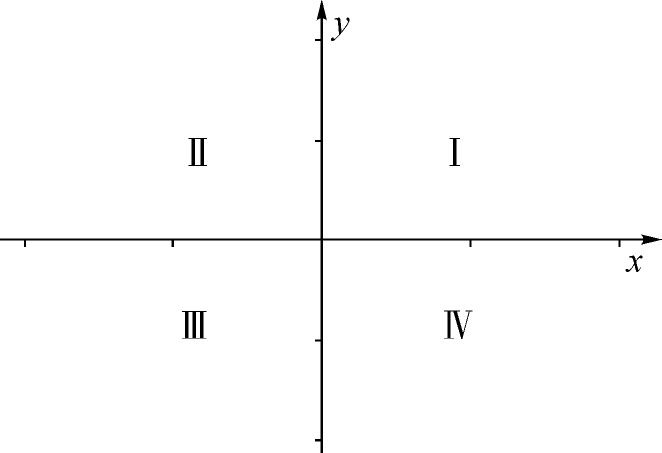
图5.1-1 平面直角坐标系中及象限
平面直角坐标系上的点一般表示成P（x，y），其中x，y为点的坐标。如图5.1-2所示，4个点的坐标分别为：P1 （3，2）、P2 （-2，-2）、P3 （2，4）、P4 （4，0）。
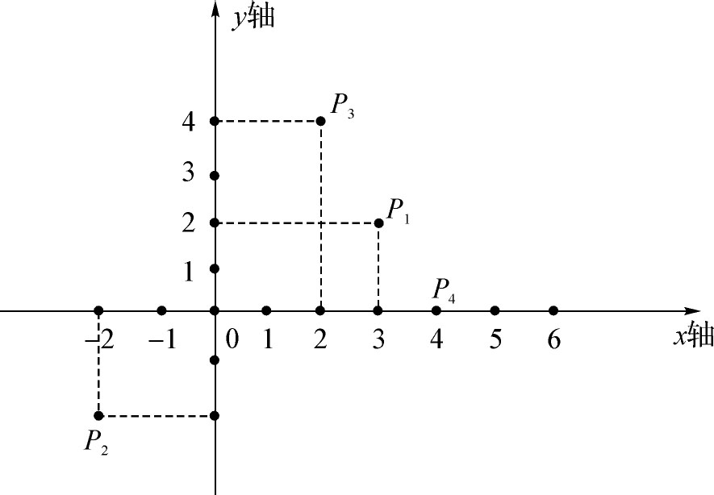
图5.1-2 平面直角坐标系中的点
任意两点P1 (x1 ,y1 ),P2 (x2 ，y2 )之间的距离记为|P1 P2 |，由勾股定理可得：
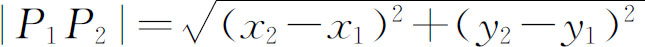
。经过两点有一条直线，并且只有一条直线。从解析几何的角度来看，平面上的直线就是由平面直角坐标系中的一个二元一次方程ax+by+c=0所表示的图形，其中a、b不同时为0。直线方程也可以采用“斜截式”，即y=kx+b，其中k称为直线的斜率，b称为（y轴上的）截距，k有可能不存在（无穷大），这在编程时要特别小心。如图5.1-3所示，3条直线L1 、L2 、L3 的方程分别为：0.75x-y+1=0，y=3，x=4。
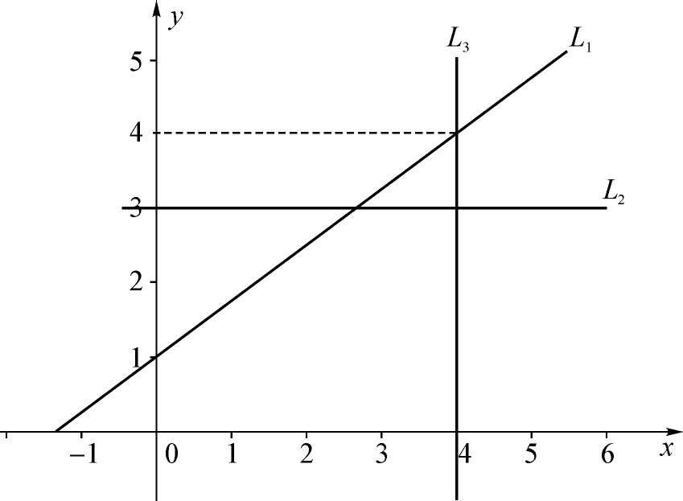
图5.1-3 平面直角坐标系中的直线
若两条直线互相平行，则它们的斜率相等；若两条直线互相垂直，则它们的斜率乘积等于-1。
两个不同的点P1 （x1 ，y1 ）、P2 （x2 ，y2 ）的凸组合是指满足下列条件的点P3 （x3 ，y3 ）的集合：对某个0≤σ≤1，有x3 =σx1 +（1-σ）x2 ，y3 =σy1 +（1-σ）y2 。一般也可以写成：P3 =σP1 +（1-σ）P2 。直观上看，P3 是在直线P1 P2 上，并且处于P1 和P2 之间（也包括P1 和P2 两点）的任意点。
两个相异点P1 和P2 的凸组合的集合成为线段，记为P1 P2 ，其中P1 、P2 称为线段的端点。
由三条或三条以上的线段首尾顺次连接所组成的封闭图形叫做多边形（《几何原本》定义为四边以上）。按照不同的标准，多边形可以分为正多边形和非正多边形、凸多边形和凹多边形等。正多边形各边相等且各内角相等。凸多边形又可称为平面多边形，凹多边形又称空间多边形。
多边形的内角和定理：n边形的内角和等于（n-2）*180°。
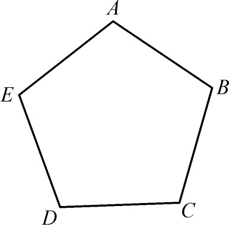 |
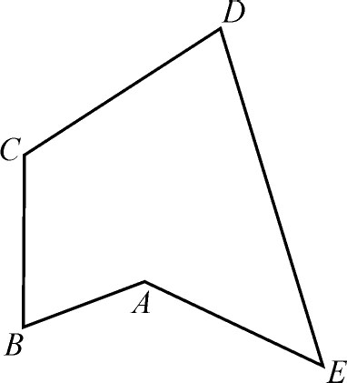 |
图5.1-4 凸多边形和凹多边形
当一条线段绕着它的一个端点（称为圆心）在平面内旋转一周时，它的另一个端点的轨迹叫做圆，线段的长度称为圆的半径。设圆心的坐标为（x0 ，y0 ），半径为r，则圆的标准方程为：(x-x0 )2 +(y-y0 )2 =r2 。
如图5.1-5所示，点与圆的位置关系有三种：
（1）若(x1 -x0 )2 +(y1 -y0 )2 >r2 ，则P（x1 ，y1 ）在圆外。
（2）若(x1 -x0 )2 +(y1 -y0 )2 =r2 ，则P（x1 ，y1 ）在圆上。
（3）若(x1 -x0 )2 +(y1 -y0 )2 <r2 ，则P（x1 ，y1 ）在圆内。
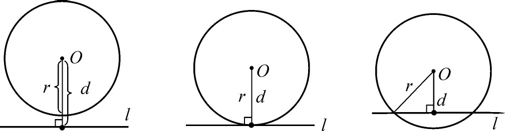
图5.1-5 点与圆的位置关系
【例5.1-1】 判断一个矩形是否能容下两个圆（ZOJ1608）
【题目大意】
给定两个圆（半径分别为r1 和r2 ）和一个矩形（边长为a和b），判断两个圆是否能放于矩形内。其中，a、b、r1 、r2 都是浮点数。
【问题分析】
考虑两个圆能放入的一个最基本的必要条件就是：半径大的圆先放进去后，半径小的圆还要能放进去，也就是首先要满足：min（a，b）≥max（r1 ，r2 ）*2。接下来就分析能否放入的临界点，假设矩形的长边（假设是下边）是a、短边是b，大圆半径是r1 ，小圆半径是r2 ，满足上述条件时（b≥r1 *2），r2 很小的情况可以不必考虑。设想右侧短边是一个可以滑动的挡板，从远处向左侧短边滑动。当a非常大时，两个圆靠近成相切状态，两个圆可以同时与底边相切（但这不是最节省空间状态）。当矩形不断向内收缩时，达到如图5.1-6所示的临界状态，两个圆分别和矩形相对的边相切，即理想状态下矩形每条边只和一个圆相切，此时不能继续收缩了。
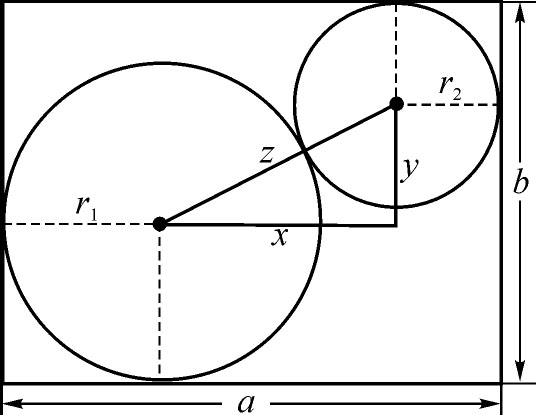
图5.1-6 临界状态
我们也可以从另一个角度理解，假设图5.1-6是一个内壁十分光滑的容器的截面，底部的宽度固定为a，且略大于大圆（表面光滑的球体）直径（2*r1 ），先把大圆放入容器，再把小圆放入，因为重力作用，小圆必然会把大圆挤向容器的另一侧，稳定于上述临界状态。
设图中直角三角形的两个直角边边长分别为x，y，斜边为z，则：
z=r1 +r2 ;
x=a-r1 -r2 =a-z;
y=b-r1 -r2 =b-z;
其中斜边z是两圆相切时的圆心距离，可看作是固定的，直角边x、y主要取决于矩形边长。因此，当z^2≤x^2+y^2时意味着矩形足够大，可以放入矩形内，否则不能放入。
【参考程序】
#include<iostream>
#include<stdio.h>
#include<math.h>
using namespace std;
bool judge（double a，double b，double r1，double r2）{
if（a>b）swap（a，b）;
if（r1>r2）swap（r1，r2）;
if（a<r2*2）
return 0;
double z=r1+r2，
x=a-z，
y=b-z;
return x*x+y*y>=z*z;
}
int main（）{
double a，b，r1，r2;
while（scanf（"%lf%lf%lf%lf"，&a，&b，&r1，&r2）!=EOF）
if（judge（a，b，r1，r2））
printf（"Yes＼n"）;
else
printf（"No＼n"）;
return 0;
}
【例5.1-2】 求三角形内周长一定的图形的最大面积（POJ1927）
【题目大意】
给定一个三角形的三边边长和一根绳子的长度（都是浮点数），将绳子放在三角形里围起来的面积最大是多少。
【问题分析】
显然，当绳子的长度足够长的时候，绳子能围城的最大面积就是三角形的面积。当绳子的长度比较短，小于三角形的内接圆的长度时，最大面积就是绳子能围成的圆的面积。下面，重点讨论介于这两者之间的情况，如图5.1-7所示。其中的两对三角形是相似的。所以，绳子所围成部分的面积就是大三角形的面积减去小三角形的的面积再加上小三角形内切圆的面积。至于小三角形内切圆的半径，则可以通过小三角形与大三角形相似算出来的比例求得。
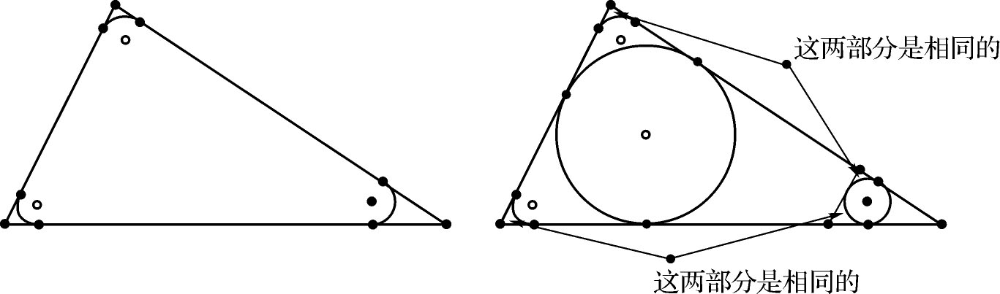
图5.1-7 最大面积示意图
【参考程序】
#include<stdio.h>
#include<math.h>
#include<iostream>
using namespace std;
double solve（double a，double b，double c，double d）{
double Pi=acos（-1.0）;
double L=a+b+c，
cosA=（b*b+c*c-a*a）/（2*b*c），
S=0.5*b*c*（sqrt（1-cosA*cosA）），
r=S*2/L;
if（d>L）
return S;
else
if（2*Pi*r>=d）
return d*d/（4*Pi）;
else{
double t=（L-d）/（L-2*Pi*r），
rr=r*t;
return S-S*t*t+Pi*rr*rr;
}
} int main（）{
double a，b，c，d;
int cas=0;
while（scanf（"%lf%lf%lf%lf"，&a，&b，&c，&d）!=EOF）{
if（a==0&&b==0&&c==0&&d==0）break;
printf（"Case %d: %.2lf＼n"，++cas，solve（a，b，c，d））;
}
return 0;
}
【例5.1-3】 求覆盖n个点的最小圆（ZOJ1450）
【问题描述】
输入平面上n个点的坐标，求能覆盖这n个点的最小圆，输出其半径。最小的含义是半径最小，圆周上的点也叫覆盖。
【问题分析】
先画出一些实例，探究一下会出现哪些情况。然后，按照下列步骤求解。
第1步：在点集中任取3点A，B，C。
第2步：作一个包含A，B，C三点的最小圆，圆周可能通过这3点，也可能只通过其中两点，但包含第3点。后一种情况圆周上的两点一定是位于圆的一条直径的两端。
第3步：在点集中找出距离第2步所建圆圆心最远的D点，若D点已在圆内或圆周上，则该圆即为所求的圆，算法结束。否则，执行第4步。
第4步：在A，B，C，D中选3个点，使由它们生成的一个包含这4个点的圆为最小，这3点成为新的A，B，C，返回执行第2步。若在第4步生成的圆的圆周只通过A，B，C，D中的两点，则圆周上的两点取成新的A和B，从另两点中任取一点作为新的C。
其实，也可以从另外一个角度思考这个问题。对于一个给定的点集A，记MinCircle（A）为点集A的最小外接圆，显然，对于所有情况，MinCircle（A）都是存在且唯一的。需要特别说明的是，当A为空集时，MinCircle（A）为空集，当A={a}时，MinCircle（A）圆心坐标为a，半径为0。显然，MinCircle（A）可以有A边界上最多三个点确定（当A中点的个数大于1时，有可能两个点确定了MinCircle（A）），也就是说存在着一个点集B，｜B｜≤3且B包含于A，有MinCircle（B）=MinCircle（A）。所以，如果a不属于B，则MinCircle（A-{a}）=MinCircle（A）；如果MinCircle（A-{a}）不等于MinCircle（A），则a属于B。所以，我们可以从一个空集R开始，不断把题目中给定点集中的点加入R，同时维护R的外接圆最小，这样就可以解决本题了。
【参考程序】
#include<stdio.h>
#include<math.h>
using namespace std;
const double eps=1e-10;
struct Point{
double x，y; };
double distance（Point p1，Point p2）{
return sqrt（（p1.x-p2.x）*（p1.x-p2.x）+（p1.y-p2.y）*（p1.y-p2.y））;
}
int n;
Point a［100005］，o;
double r;
void circum（Point p1，Point p2，Point p3）{
double a=2*（p2.x-p1.x），b=2*（p2.y-p1.y），
c=p2.x*p2.x+p2.y*p2.y-p1.x*p1.x-p1.y*p1.y，
d=2*（p3.x-p1.x），e=2*（p3.y-p1.y），
f=p3.x*p3.x+p3.y*p3.y-p1.x*p1.x-p1.y*p1.y;
o.x=（b*f-e*c）/（b*d-e*a）;
o.y=（d*c-a*f）/（b*d-e*a）;
r=distance（p1，o）;
}
int main（）{
while（scanf（"%d"，&n）!=EOF&&n）{
for（int i=1;i<=n;i++）
scanf（"%lf%lf"，&a［i］.x，&a［i］.y）;
o=a［1］，r=0;
for（int i=2;i<=n;i++）
if（distance（o，a［i］）>r+eps）{
o=a［i］;r=0;
for（int j=1;j<=i-1;j++）
if（distance（o，a［j］）>r+eps）{
o.x=（a［i］.x+a［j］.x）/2;
o.y=（a［i］.y+a［j］.y）/2;
r=distance（o，a［j］）;
for（int k=1;k<=j-1;k++）
if（distance（o，a［k］）>r+eps）
circum（a［i］，a［j］，a［k］）;
}
}
printf（"%.2lf %.2lf %.2lf＼n"，o.x，o.y，r）;
}
return 0;
}
【例5.1-4】 地图（map.*，64MB，1秒）
【问题描述】
现代在绘制地图的过程中碰到的最大问题就是在地图上标注名称。如果你把每一个城市、乡镇、村庄的名字简单地都标注在地图上，它们中的很大一部分将会互相重叠，整幅地图也将变得无法阅读。
本题中，你将得到一个二维平面和一组坐标，每个坐标代表一个需要标注的点。所要标注的地名用一个矩形表示，矩形的边与坐标轴平行，其长度恰好为宽度的3倍。每个点都与唯一的矩形相对应，且恰好处在该矩形的左上角。任意两个矩形的大小都是相同的，且不允许重叠。请编程计算出矩阵可能的最大宽度。
【输入格式】
输入文件的第一行是正整数N，表示平面上点的个数，2≤N≤100000；
接下来的N行，每行有两个用空格隔开的整数，分别代表每个点的X坐标和Y坐标，0≤X，Y≤1000000。任意两个点都不相同。
【输出格式】
输出一行一个数，表示矩形最大可能的宽度，精确到小数点后两位。
【输入样例】
3
0 0
5 4
3 7
【输出样例】
3．00
【问题分析】
将所有点Y坐标乘以3之后，问题转化为正方形。问题也就是任意两点间x坐标与y坐标的差中最大的一个的最小值是多少。
对于一个点（x0 ，y0 ）来说，根据点对的双向选择性，可只考虑y-x>y0 -x0 的点。接下来对于Δx>Δy和Δx<Δy分别讨论，发现可将点分为x+y>x0 +y0 和x+y≤x0 +y0 。对于x+y≤x0 +y0 ，按照y-x排序，从小到大枚举点插入点集。将y+x离散，建立树状数组，维护x坐标最大值。而对于x+y>x0 +y0 ，只要把点关于x+y=0翻转即可。算法的时间复杂度为Θ（nlog2 n）。
【参考程序】
#include<stdio.h>
#include<algorithm>
using namespace std;
int n;
struct point{
int x，y;
}a［100005］;
int ans=200000000; bool cmp1（point a，point b）{
return a.y-a.x>b.y-b.x｜｜（a.y-a.x==b.y-b.x&&a.x<b.x）;
}
int num［100005］，t［100005］;
int pos（int s）{
return lower_bound（&num［1］，&num［n+1］，s）-num;
}
void solve（）{
sort（&a［1］，&a［n+1］，cmp1）;
for（int i=1;i<=n;i++）
t［i］=0;
for（int i=1;i<=n;i++）
num［i］=a［i］.y+a［i］.x;
sort（&num［1］，&num［n+1］）;
for（int i=1;i<=n;i++）{
int Pos=pos（a［i］.y+a［i］.x）;
for（int x=Pos;x>=1;x-=x&-x）
if（t［x］）
ans=min（ans，a［i］.x-a［t［x］］.x）;
for（int x=Pos;x<=n;x+=x&-x）
if（a［t［x］］.x<a［i］.x｜｜t［x］==0）
t［x］=i;
}
}
int main（）{
scanf（"%d"，&n）;
for（int i=1;i<=n;i++）
scanf（"%d%d"，&a［i］.x，&a［i］.y），
a［i］.y*=3;
solve（）;
for（int i=1;i<=n;i++）
swap（a［i］.x，a［i］.y）;
solve（）;
printf（"%.2lf＼n"，double（ans）/3）;
return 0;
}
矢量是指有方向的线段，也称向量，即线段的两个端点P1 和P2 的顺序是有关系的，记为
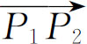
。设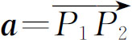
，则有向线段的长度称为矢量的模，记作|a|。如果P1 是坐标原点，则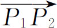
又称为矢量P 2 。矢量的斜率k有正负之分，如图5.2-1所示。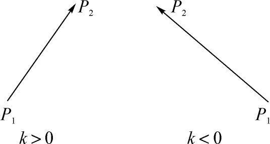 |
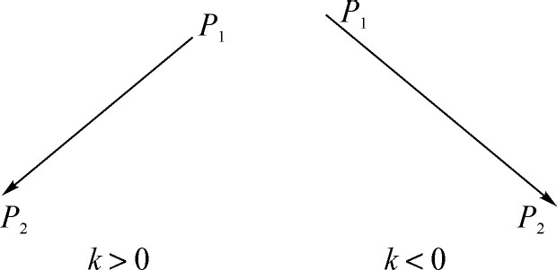 |
图5.2-1 矢量的正负
矢量的分解定理：如果空间上的三个矢量a、b、c 不共面，那么对任一矢量p ，一定存在一个且仅一个有序实数组x、y、z，使得：p =xa +yb +zc 。
矢量分析是高等数学的一个分支，主要应用于物理学，如力学分析。在一些计算几何问题中，矢量和矢量运算的一些独特性质往往能发挥出十分突出的作用，使问题的求解过程变得简洁而高效。
以原点O为起点、点A为端点作矢量a ，再以点A为起点、点B为端点作矢量b，则以点A为起点、点B为端点的矢量称为矢量a 与b 的和，记为a +b ，如图5.2-2（中）所示。
若从点A作
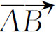
，要求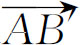
的模等于|b|，方向与b 相反，即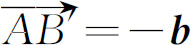
，则以原点O为起点、点B′为端点的矢量称为矢量a 与b 的差，记为a -b ，如图5.2-2（右）所示。显然，a +b =b +a ，a -b =-（b -a ）。
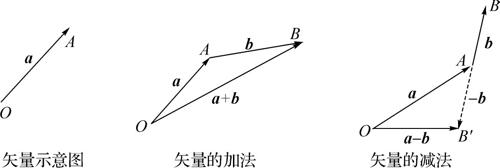
图5.2-2 矢量的加减法
两个矢量的数量积，又称“点乘”，其结果是一个数，大小等于这两个矢量的模的乘积再乘以它们夹角的余弦，即：a ·b ＝｜a ｜｜b ｜cos<a ，b >。
根据矢量的分解定理，数量积等于两个矢量的对应支量乘积之和。
a ·b ＝a x b x ＋a y b y ＋a z b z
矢量的数量积有如下的性质：
①a ·e =｜a ｜｜e ｜cos<a ，e >=｜a ｜cos<a ，e >
②a ⊥b 等价于a ·b ＝0，即a x b x ＋a y b y ＋a z b z =0
③自乘：｜a ｜2 ＝a ·a
④结合律：（λ·a ）·b =λ（a ·b ）
⑤交换律：a ·b ＝b ·a
⑥分配律：a ·（b +c ）＝a ·b +a ·c
严格地说，两个矢量a =x1 i +y1 j +z1 k 、b =x2 i +y2 j +z2 k 的矢量积是三维矢量的二元运算，记作a ×b ，又称为“叉乘”、“叉积”。定义为：
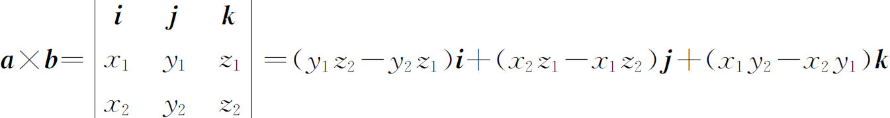
其结果仍然是一个三维向量，其中i，j，k是空间的三个基底。
矢量a 和矢量b 叉乘的几何意义为：它的模等于由a 和b 作成的平行四边形的面积，方向与平行四边形所在平面垂直，当站在这个方向观察时，a 转过一个小于π的角到达b 的方向。这个方向也可以用物理上的右手螺旋定则判断：右手四指弯向由a 转到b 的方向（转过的角小于π），拇指指向的就是矢量积的方向，如图5.2-3（左）所示。
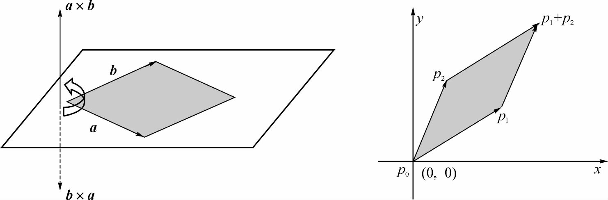
图5.2-3 矢量积的几何意义
叉积还有一个等价的、更有用的定义，把叉积定义为一个矩阵的行列式：
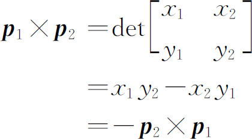
如图5.2-3（右）所示，如果p 1 ×p 2 为正数，则相对原点（0，0）来说，p 1 在p 2 的顺时针方向；如果p 1 ×p 2 为负数，则p 1 在p 2 的逆时针方向。如果p 1 ×p 2 =0，则p 1 和p 2 共线，方向相同或相反。
矢量的叉积对于计算几何有着重要的意义，是很多算法的核心。用叉积可以判断从一个矢量到另一个矢量的旋转方向，可以求同时垂直于两个矢量的矢量方向，还能用来计算任意多边形的面积等等。
【例5.2-1】 两个矢量的位置关系（pos.*，64MB，1秒）
【题目大意】
给定两个有公共端点的矢量
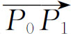
和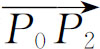
，判断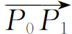
是否在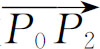
的顺时针方向。【问题分析】
如图5.2-4所示，把p0 作为原点，得出矢量
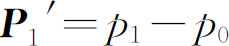
和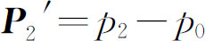
，它们的叉积t=(p1 -p0 )×(p2 -p0 )=(x1 -x0 )(y2 -y0 )-(x2 -x0 )(y1 -y0 )，如果t>0，则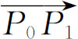
在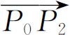
的顺时针方向；如果t<0，则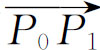
在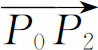
的逆时针方向；如果t=0，则p0 、p1 、p2 三点共线。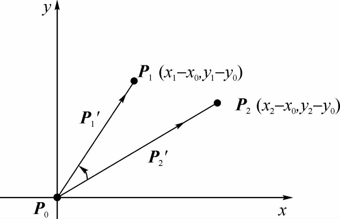
图5.2-4 矢量的位置关系
同样，也可以利用叉积判断“连续线段是向左转还是向右转”，如图5.2-5所示，即两条连续线段
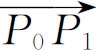
和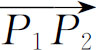
在点P1 是向左转还是向右转，也即∠P1 P0 P2 的转向。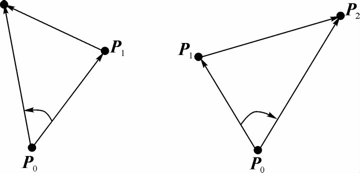
图5.2-5 连续线段的转向
【参考程序】
#include<stdio.h>
#include<algorithm>
using namespace std;
struct point{
double x，y;
}p0，p1，p2;
int main（）{
scanf（"%lf%lf %lf%lf %lf%lf"，&p0.x，&p0.y，&p1.x，&p1.y，&p2.x，&p2.y）;
double t=（p1.x-p0.x）*（p2.y-p0.y）-（p2.x-p0.x）*（p1.y-p0.y）;
if（t>0）
printf（"Yes＼n"）;
else
printf（"No＼n"）;
return 0;
}
【例5.2-2】 Toy Storage（POJ2398）
【题目大意】
如图5.2-6所示，给定一个盒子，其中有隔板将其分成多个格子。然后给出若干个点，肯定在这些格子中（在边上也算），问各个格子中点的个数。
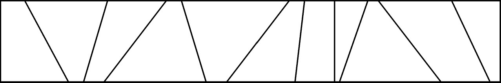
图5.2-6 盒子分格
【问题分析】
把隔板排序以后，l和r表示可能存在范围的左右隔板，每次取mid=（l+r）/2缩小可能范围，l和r相邻时停止。
【参考程序】
#include<stdio.h>
#include<algorithm>
using namespace std;
const double eps=1e-10;
struct point{
double x，y;
point operator-（point &s）
{return （point）{x-s.x，y-s.y};}
}a［1005］，b［1005］;
double operator*（point a，point b）{
return a.x*b.y-b.x*a.y;
}
struct line{
double u，l;
}l［1005］;
int n，m;
bool cmp（line a，line b）{
return a.u<b.u;
}
int cnt［1005］，ans［1005］;
int main（）{
while（scanf（"%d"，&n）!=-1&&n）{
scanf（"%d"，&m）;
scanf（"%lf%lf%lf%lf"，&b［0］.x，&b［0］.y，&a［n+1］.x，&a［n+1］.y）; a［0］.x=b［0］.x，a［0］.y=a［n+1］.y;
b［n+1］.x=a［n+1］.x，b［n+1］.y=b［0］.y;
for（int i=1;i<=n;i++）
scanf（"%lf%lf"，&l［i］.u，&l［i］.l）;
sort（&l［1］，&l［n+1］，cmp）;
for（int i=1;i<=n;i++）
{a［i］.x=l［i］.l;a［i］.y=a［n+1］.y;
b［i］.x=l［i］.u;b［i］.y=b［0］.y;}
for（int i=1;i<=n+1;i++）cnt［i］=0;
for（int i=0;i<=m;i++）ans［i］=0;
for（int i=1;i<=m;i++）{
point c;
scanf（"%lf%lf"，&c.x，&c.y）;
if（!（a［n+1］.y<=c.y&&c.y<=b［0］.y&&b［0］.x<=c.x&&c.x<=a［n+1］.x））continue;
int l=0，r=n+1;
while（l+1!=r）{
int mid=（l+r）/2;
if（（b［mid］-a［mid］）*（c-a［mid］）>0）
r=mid;
else
l=mid;
}
cnt［l+1］++;
}
printf（"Box＼n"）;
for（int i=1;i<=n+1;i++）
if（cnt［i］）
ans［cnt［i］］++;
for（int i=1;i<=m;i++）
if（ans［i］）
printf（"%d: %d＼n"，i，ans［i］）;
}
return 0;
}
【例5.2-3】 Stacking Cylinders（POJ2194）
【问题描述】
Cylinders （e.g．oil drums）（of radius 1 foot）are stacked in a rectangular bin．Each cylinder on an upper row rests on two cylinders in the row below．The cylinders in the bottom row rest on the floor．Each row has one less cylinder than the row below．
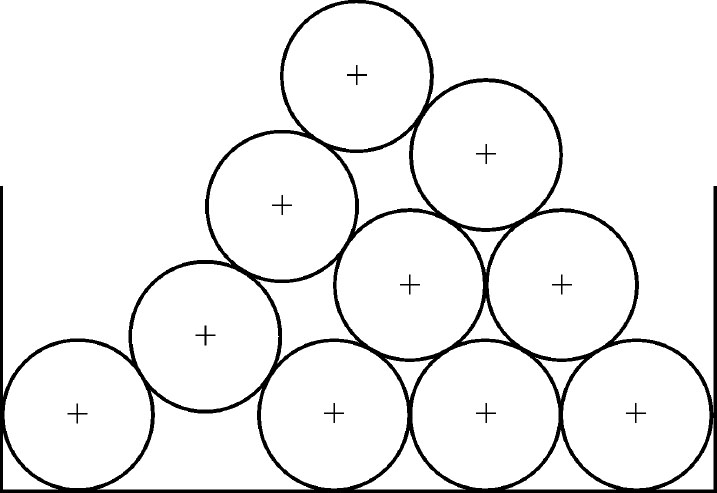
图5.2-7 Stacking Cylinders
This problem is to write a program to compute the location of the center of the top cylinder from the centers of the cylinders on the bottom row．Computations of intermediate values should use double precision．
【输入格式】
Each data set will appear in one line of the input．An input line consists of the number，n，of cylinders on the bottom row followed by n floating point values giving the x coordinates of the centers of the cylinders （the y coordinates are all 1.0 since the cylinders are resting on the floor （y=0.0））．The value of n will be between 1 and 10 （inclusive）．The end of input is signaled by a value of n=0．The distance between adjacent centers will be at least 2.0 （so the cylinders do not overlap）but no more than 3.4 （cylinders at level k will never touch cylinders at level k-2）．
【输出格式】
The output for each data set is a line containing the x coordinate of the topmost cylinder rounded to 4 decimal places，a space and the y coordinate of the topmost cylinder to 4 decimal places．Note: To help you check your work，the x-coordinate of the center of the top cylinder should be the average of the x-coordinates of the leftmost and rightmost bottom cylinders．
【输入样例】
4 1.0 4.4 7.8 11.2
1 1.0
6 1.0 3.0 5.0 7.0 9.0 11.0
10 1.0 3.0 5.0 7.0 9.0 11.0 13.0 15.0 17.0 20.4
5 1.0 4.4 7.8 14.6 11.2
0
【输出样例】
6．1000 4.1607
1．0000 1.0000
6．0000 9.6603
10．7000 15.9100
7．8000 5.2143
【问题分析】
如图5.2-8所示，考虑n个圆向n+1个圆扩展的情况。在左下角加入一个圆，并依次叠放新圆。发现图示阴影区域为菱形，边长为2r，线段a和线段b左右对称，线段b和线段c平行，由此可得顶端圆心的X坐标减小
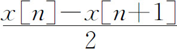
，Y坐标增加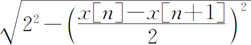
。经过简单变换可得：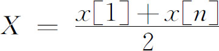
，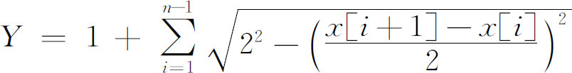
。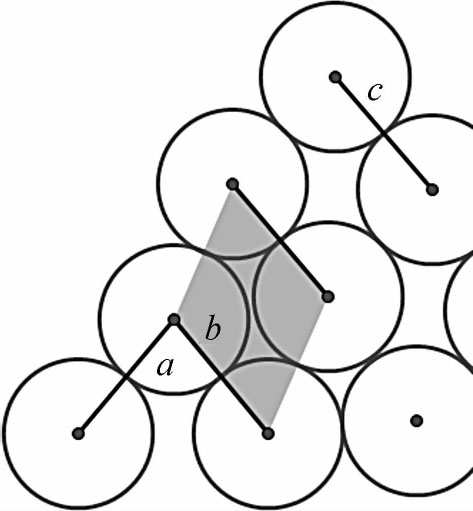
图5.2-8 扩展情况
【参考程序】
#include<stdio.h>
#include<algorithm>
#include<math.h>
using namespace std;
int n;
double x［11］，X，Y;
int main（）{
while（scanf（"%d"，&n）!=EOF&&n）{
for（int i=1;i<=n;i++）
scanf（"%lf"，&x［i］）;
sort（&x［1］，&x［n+1］）;
X=（x［1］+x［n］）/2;Y=1;
for（int i=1;i<n;i++）
Y+=sqrt（4-（x［i+1］-x［i］）*（x［i+1］-x［i］）/4）;
printf（"%.4f %.4f＼n"，X，Y）;
}
return 0;
}
任何复杂的算法都是由许多简单的算法组合而成的，计算几何也同样如此，比如求两点间的线段长度、求两点所连直线的斜率或者方程、求两条直线的交点坐标、求一个点关于一条直线的对称点坐标等等。这些基本算法是求解计算几何问题的基础，下面仅选择几个典型的问题来分析，更多的基本问题和算法请读者自主研究学习。
【例5.3-1】 判断点是否在线段上（pointonseg.*，64MB，1秒）
【问题描述】
输入一个点Q和一条线段P1 P2 的坐标，判断这个点是否在该线段上。
【输入格式】
一行，依次表示Q、P1 和P2 的坐标。
【输出格式】
一行一个字符串，“YES”或者“NO”分别表示改点在或者不在线段上。
【输入和输出样例】
| 样例输入 | 样例输出 |
| 3 3 1 2 7 5 | YES |
| 3 3 2 1 2 5 | NO |
【问题分析】
判断点Q在线段P1 P2 上的依据是：（Q-P1 ）×（P2 -P1 ）=0，且Q在以P1 、P2 为对角顶点的矩形内。前者保证Q点在直线P1 P2 上（利用叉积为0判断三点共线），后者保证Q点不在线段P1 P2 的延长线或反向延长线上，对于这一步骤的判断可以用以下语句实现：（min（P1 ．x，P2 ．x）≤Q．x≤max（P1 ．x，P2 ．x））and（min（P1 ．y，P2 ．y）≤Q．y≤max（P1 ．y，P2 ．y））。
【参考程序】
#include<stdio.h>
#include<algorithm>
#include<math.h>
using namespace std;
const double eps=1e-10;
struct point{
double x，y;
point operator-（point &s）
{return （point）{x-s.x，y-s.y};}
}Q，P1，P2;
double operator*（point a，point b）{
return a.x*b.y-b.x*a.y;
} int main（）{
scanf（"%lf%lf%lf%lf%lf%lf"，&Q.x，&Q.y，&P1.x，&P1.y，&P2.x，&P2.y）;
if（fabs（（Q-P1）*（P2-P1））<eps
&& min（P1.x，P2.x）-eps<=Q.x && Q.x-eps<=max（P1.x，P2.x）
&& min（P1.y，P2.y）-eps<=Q.y && Q.y-eps<=max（P1.y，P2.y））
printf（"YES＼n"）;
else
printf（"NO＼n"）;
return 0;
}
【例5.3-2】 点与三角形的关系（pointinstr.*，64MB，1秒）
【问题描述】
已知一个平面坐标系中三角形三个点A、B、C的坐标，判断另外一个点D是否在三角形内（点在三角形边上也认为在三角形内）。
【输入格式】
输入共四行，每行两个数，前三行表示A、B、C的坐标，第四行为D的坐标。
【输出格式】
输出一个字符串，“in”表示点D在三角形ABC内，“out”表示点D在三角形ABC外。
【输入和输出样例】
| 样例输入 | 样例输出 |
| 1 2 | in |
| 7 1 | |
| 7 5 | |
| 5 3 | |
| 2 1 | out |
| 1 5 | |
| 7 1 | |
| 5 3 |
【问题分析】
如图5.3-1所示，很容易想到利用三角形面积的比较来判断点D与三角形ABC的位置关系。即：通过比较三角形ABC的面积与三角形ABD、BCD、CAD面积之和的大小来判断点是否在三角形内。设S为三角形ABC的面积，S1 为三角形ABD的面积，S2 为三角形BCD的面积，S3 为三角形CAD的面积。如果S=S1 +S2 +S3 ，那么点D在三角形ABC内部或边上。如果S<S1 +S2 +S3 ，则点D在三角形ABC外部。
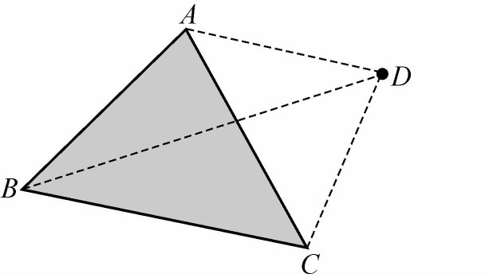 |
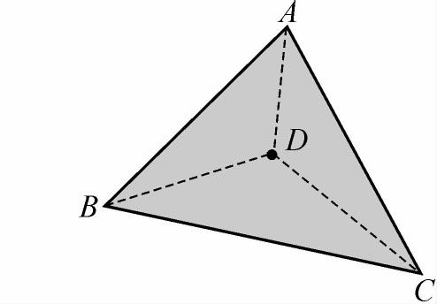 |
图5.3-1 点与三角形的位置关系
本题更简单的做法是采用矢量的叉积做。因为三角形是凸多边形，所以如果点D在三角形ABC内，则沿着三角形的边界逆时针走，点D一定保持在边界的左边，如图5.3-2所示。也就是说，点D在边AB、BC、CA的左边。判断一个点P3 是否在一条射线P1 P2 的左边，可以通过P1 P2 、P1 P3 两个矢量的叉积的正负来判断。如果叉积为正，则P3 在射线P1 P2 的左边；如果叉积为负，则P3 在射线P1 P2 的右边；如果叉积为0，则P3 在射线P1 P2 上。
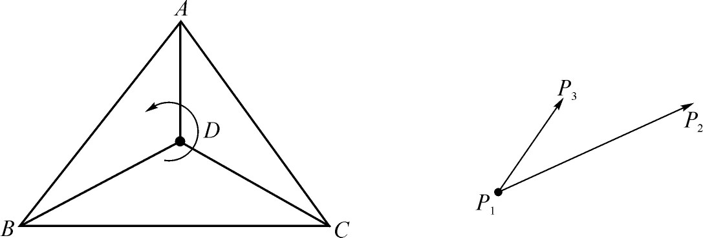
图5.3-2 三角形内的矢量旋转
【参考程序】
#include<stdio.h>
#include<algorithm>
#include<math.h>
using namespace std;
const double eps=1e-10;
struct point{
double x，y;
point operator-（point &s）
{return （point）{x-s.x，y-s.y};}
}A，B，C，D;
double operator*（point a，point b）{
return a.x*b.y-b.x*a.y;
}
bool inside（）{
if（（B-A）*（C-A）<0）swap（B，C）;
if（（B-A）*（D-A）<-eps）return 0;
if（（C-B）*（D-B）<-eps）return 0;
if（（A-C）*（D-C）<-eps）return 0;
return 1;
}
int main（）{
scanf（"%lf%lf%lf%lf%lf%lf%lf%lf"，&A.x，&A.y，&B.x，&B.y，&C.x，&C.y，&D.x，&D.y）;
if（inside（））
printf（"in＼n"）;
else
printf（"out＼n"）;
return 0;
}
【例5.3-3】 判断点是否在多边形中（pointinpol.*，64MB，1秒）
【问题描述】
输入多边形的边数n以及按顺时针方向给出的n个点的坐标，再输入一个点P的坐标。判断点P在该n边形的内部、外部还是边上。
【输入格式】
第一行一个整数n。
接下来n行，每行2个实数，表示x，y坐标。
接下来一行，表示P坐标。
【输出格式】
一行一个字符串，“BIAN”、“NEIBU”或者“WAIBU”依次表示点在多边形边上、内部或者外部。
【输入和输出样例】
| 样例输入 | 样例输出 |
| 8 | NEIBU |
| 2 2 | |
| 3 6 | |
| 3 2 | |
| 6 3 | |
| 6 4 | |
| 4 3 | |
| 7 6 | |
| 7 1 | |
| 5 2 | |
| 8 | WAIBU |
| 2 2 | |
| 3 6 | |
| 3 2 | |
| 6 3 | |
| 6 4 | |
| 4 3 | |
| 7 6 | |
| 7 1 | |
| 5 3 | |
| 8 | BIAN |
| 2 2 | |
| 3 6 | |
| 3 2 | |
| 6 3 | |
| 6 4 | |
| 4 3 | |
| 7 6 | |
| 7 1 | |
| 5 4 |
【问题分析】
判断点P是否在多边形的边上比较容易，可以逐一对每条边进行检查，判断P是否在多边形的边上。关键问题在于解决点P在多边形的内部还是外部。
任意画一些多边形，尝试从P点画一些足够长的射线，研究发现：如果这条射线与多边形的交点个数为奇数，那么P点在多边形的内部；如果交点数为偶数（包括0个），那么P点在多边形的外部。
当然，可能会出现如图5.3-3所示的一些特殊情况。左图中P点与多边形其中的一个点相交，右图中P点与多边形的一条边重合。对这两种特殊情况往往有以下两种处理方法：
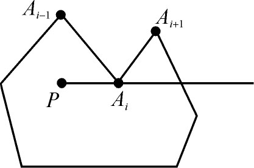 |
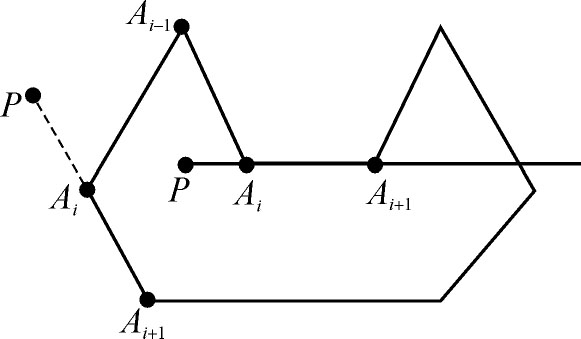 |
图5.3-3 射线与多边形相交的特殊情况
方法1、再任意画一条射线，判断P点与多边形的交点个数，直到不出现特殊情况为止。
方法2、对两种情况另作处理：
（1）交点在Ai 点上：如果Ai-1 、Ai+1 在射线的同侧，则这点不算；如果Ai-1 、Ai+1 在射线的两侧，则这点要算。
（2）和多边形一条边Ai 、Ai+1 重合：再反向作一条射线，找交点情况（其实并不能完全解决出现的问题）。
在实际应用时，出现特殊情况的可能性很小。因此，第一种方法用的比较多，本质上是一种“随机化”算法。下面给出主要算法流程：
（1）输入数据。
（2）逐一判断点P是否在多边形的边上，如果是，则输出“BIAN”，退出。
（3）随机产生多边形外一点Q，作出射线PQ，直到射线PQ不过多边形的任意一点且不与多边形的任意一边共线为止。
（4）计算射线PQ与多边形边的交点数，如果交点数为奇数，则点P在多边形的内部，否则点P在多边形的外部。
【参考程序】
#include<stdio.h>
#include<stdlib.h>
#include<algorithm>
#include<math.h>
using namespace std;
const double eps=1e-10;
struct point{
double x，y;
point operator-（point &s）
{return （point）{x-s.x，y-s.y};}
}a［100005］，P，Q;
double operator*（point a，point b）{
return a.x*b.y-b.x*a.y;
}
int n;
bool bian（point Q，point P1，point P2）{
return fabs（（Q-P1）*（P2-P1））<eps
&& min（P1.x，P2.x）-eps<=Q.x && Q.x-eps<=max（P1.x，P2.x）
&& min（P1.y，P2.y）-eps<=Q.y && Q.y-eps<=max（P1.y，P2.y）;
}
bool cros（point P1，point P2，point P3，point P4）{ if（!（max（P1.x，P2.x）>=min（P3.x，P4.x）+eps&&max（P3.x，P4.x）>=min（P1.x，P2.x）+eps
&&max（P1.y，P2.y）>=min（P3.y，P4.y）+eps&&max（P3.y，P4.y）>=min（P1.y，P2.y）+eps））
return 0;
if（（（P3-P1）*（P2-P1））*（（P4-P1）*（P2-P1））>eps）
return 0;
if（（（P1-P3）*（P4-P3））*（（P2-P3）*（P4-P3））>eps）
return 0;
return 1;
}
int main（）{
scanf（"%d"，&n）;
for（int i=1;i<=n;i++）
scanf（"%lf%lf"，&a［i］.x，&a［i］.y）;
scanf（"%lf%lf"，&P.x，&P.y）;
for（int i=1;i<=n;i++）
if（bian（P，a［i］，a［i==n？1∶i+1］））
{printf（"BIAN＼n"）;return 0;}
bool cont=1;
while（cont）{
cont=0;
Q.x=（rand（）<<15）+rand（）+10000000;
Q.y=（rand（）<<15）+rand（）+10000000;
for（int i=1;i<=n;i++）
if（bian（a［i］，P，Q））
{cont=1;break;}
if（cont）
continue;
int sum=0;
for（int i=1;i<=n;i++）
sum+=cros（P，Q，a［i］，a［i==n？1∶i+1］）;
if（sum&1）
printf（"NEIBU＼n"）;
else
printf（"WAIBU＼n"）;
}
return 0;
}
【例5.3-4】 判断线段是否在多边形中（segmentinpol.*，64MB，1秒）
【问题描述】
输入多边形的边数n以及按顺时针方向给出的n个点的坐标，再输入一个条线段的两个端点坐标。判断线段是否在该多边形中。
【输入格式】
第一行一个整数n。
接下来n行，每行2个实数，表示x，y坐标。
接下来一行，4个实数，表示线段2个端点的坐标。
【输出格式】
一行一个字符串，“YES”或者“NO”分别表示线段是否在多边形中。
【输入和输出样例】
| 样例输入 | 样例输出 |
| 6 | YES |
| 1 1 | |
| 2 4 | |
| 5 5 | |
| 2 2 | |
| 5 4 | |
| 3 1 | |
| 2 1 | |
| 2 4 | |
| 6 | NO |
| 1 1 | |
| 2 4 | |
| 5 5 | |
| 2 2 | |
| 5 4 | |
| 3 1 | |
| 3 2 | |
| 3 4 |
【问题分析】
如果多边形是凸多边形，则问题很简单，只要判断两个端点是否都在多边形中。如果是一般的简单多边形内，则需要满足下面2个必要条件：线段的两个端点都在多边形内；线段和多边形的所有边都不内交。
根据本题的思路，读者可以自己思考如何判断折线、多边形、矩形是否在多边形中。
【参考程序】
#include<stdio.h>
#include<stdlib.h>
#include<algorithm>
#include<vector>
#include<math.h>
using namespace std;
const double eps=1e-10;
struct point{
doublex，y;
point operator-（point &s）
{return （point）{x-s.x，y-s.y};}
}a［100005］，P，Q，q［100005］;
int top;
double operator*（point a，point b）{
returna.x*b.y-b.x*a.y;
}
boolcmp（const point &a，const point &b）{
returna.x<b.x｜｜（a.x==b.x&&a.y<b.y）;
}
int n;
boolbian（point Q，point P1，point P2）{
returnfabs（（Q-P1）*（P2-P1））<eps
&&min（P1.x，P2.x）-eps<=Q.x&&Q.x-eps<=max（P1.x，P2.x）
&&min（P1.y，P2.y）-eps<=Q.y&&Q.y-eps<=max（P1.y，P2.y）;
}
boolcros（point P1，point P2，point P3，point P4）{
if（!（max（P1.x，P2.x）>=min（P3.x，P4.x）+eps&&max（P3.x，P4.x）>=min（P1.x，P2.x）+eps
&&max（P1.y，P2.y）>=min（P3.y，P4.y）+eps&&max（P3.y，P4.y）>=min（P1.y，P2.y）+eps））
return 0;
if（（（P3-P1）*（P2-P1））*（（P4-P1）*（P2-P1））>eps）
return 0;
if（（（P1-P3）*（P4-P3））*（（P2-P3）*（P4-P3））>eps）
return 0;
return 1;
}
boolpointinside（point P）{ for（inti=1;i<=n;i++）
if（bian（P，a［i］，a［i==n？1∶i+1］））
return 1;
boolcont=1;
while（cont）{
cont=0;
Q.x=（rand（）<<15）+rand（）+10000000;
Q.y=（rand（）<<15）+rand（）+10000000;
for（inti=1;i<=n;i++）
if（bian（a［i］，P，Q））
{cont=1;break;}
if（cont）
continue;
int sum=0;
for（inti=1;i<=n;i++）
sum+=cros（P，Q，a［i］，a［i==n？1∶i+1］）;
return sum&1;
}
}
boolseginside（point P，point Q）{
if（!pointinside（P））return 0;
if（!pointinside（Q））return 0;
a［0］=a［n］;a［n+1］=a［1］;
top=2;
q［1］=P;q［2］=Q;
for（inti=1;i<=n;i++）{
if（cros（P，Q，a［i-1］，a［i］））{
if（bian（a［i］，P，Q））{
q［++top］=a［i］;
continue;
}
if（bian（a［i-1］，P，Q））continue;
if（bian（P，a［i-1］，a［i］））continue;
if（bian（Q，a［i-1］，a［i］））continue;
return 0;
}
}
sort（&q［1］，&q［top+1］，cmp）; for（inti=2;i<=top;i++）
if（!pointinside（（point）{（q［i-1］.x+q［i］.x）/2，（q［i-1］.y+q［i］.y）/2}））
return 0;
return 1;
}
int main（）{
scanf（"%d"，&n）;
for（inti=1;i<=n;i++）
scanf（"%lf%lf"，&a［i］.x，&a［i］.y）;
scanf（"%lf%lf%lf%lf"，&P.x，&P.y，&Q.x，&Q.y）;
if（seginside（P，Q））
printf（"YES＼n"）;
else
printf（"NO＼n"）;
return 0;
}
【例5.3-5】 判断两线段是否相交（segmentcross.*，64MB，1秒）
【问题描述】
输入两条线段P1 P2 和P3 P4 的坐标，判断它们是否相交。
【输入格式】
共四行，每行2个整数，依次表示4个点P1 、P2 、P3 和P4 的坐标。
【输出格式】
一行一个字符串，“YES”或者“NO”分别表示线段是否相交。
【输入和输出样例】
| 样例输入 | 样例输出 |
| 1 1 | YES |
| 6 4 | |
| 2 2 | |
| 4 2 | |
| 0 2 | NO |
| 0 2 | |
| -1 4 | |
| 1 1 |
【问题分析】
判断两条直线相交是很容易的，只要将两条直线的方程连列成方程组求解。但是，判断两条线段是否相交要复杂的多。一般通过“快速排斥试验”和“跨立试验”两步完成。
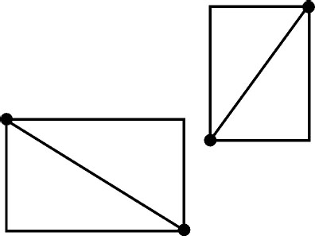 |
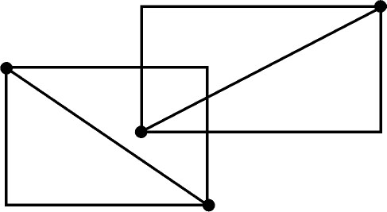 |
图5.3-4 两个矩形的位置关系
第1步、快速排斥试验
如果以P1 P2 和P3 P4 为对角线分别作矩形，而这两个矩形不相交，则这两条线段肯定不相交，如图5.3-4（左）所示。即使两个矩形相交，这两条线段也不一定相交，如图5.3-4（右）所示，这时再通过第2步来进一步判断。
快速排斥试验（两个矩形相交）表示成语句，当且仅当下列式子为真：
（max（x1 ，x2 ）≥min（x3 ，x4 ））and （max（x3 ，x4 ）≥min（x1 ，x2 ））and（max（y1 ，y2 ）≥min（y3 ，y4 ））and （max（y3 ，y4 ）≥min（y1 ，y2 ））
式子的前半部分判断在x方向上是否相交，后半部分判断在y方向上是否相交。只有在两个方向上都相交，两个矩形才相交。
第2步、跨立试验
如果点P1 处于直线P3 P4 的一边，而P2 处于该直线的另一边，则说成线段p1 p2 “跨立”直线P3 P4 。如果P1 或P2 在直线P3 P4 上，也算跨立。两条线段相交当且仅当它们能够通过第1步的快速排斥试验，并且每一条线段都跨立另一条线段所在的直线。
具体实现用叉积去做。如图5.3-5所示，判断矢量p1 p3 和p1 p4 是否在p1 p2 两边相对的位置上，如果这样，则线段p1 p2 跨立直线P3 P4 。也即检查叉积（P3 -P1 ）×（P2 -P1 ）与（P4 -P1 ）×（P2 -P1 ）的符号是否相同，相同则不跨立，线段也就不相交，否则相交。
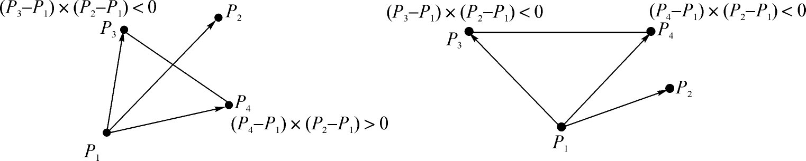
图5.3-5 跨立试验
当然也有一些特殊情况需要处理，如任何一个叉积为0，则P3 或P4 在直线P1 P2 上，又因为通过了快速排斥试验，所以如图5.3-6（左）的情况是不可能出现的，只会出现右边的两种情况。当然，还会出现一条或两条线段的长度为0，如果两条线段的长度都是0，则只要通过快速排斥试验就能确定；如果仅有一条线段的长度为0，如p3 p4 的长度为0，则线段相交当且仅当叉积（P3 -P1 ）×（P2 -P1 ）=0。
图5.3-6 跨立试验的特例
【参考程序】
#include<stdio.h>
#include<algorithm>
#include<math.h>
using namespace std;
const double eps=1e-10;
struct point{
double x，y;
point operator-（point &s）
{return （point）{x-s.x，y-s.y};}
};
double operator*（point a，point b）{
return a.x*b.y-b.x*a.y;
}
bool cros（point P1，point P2，point P3，point P4）{
if（!（max（P1.x，P2.x）>=min（P3.x，P4.x）+eps&&max（P3.x，P4.x）>=min（P1.x，P2.x）+eps
&&max（P1.y，P2.y）>=min（P3.y，P4.y）+eps&&max（P3.y，P4.y）>=min（P1.y，P2.y）+eps））
return 0;
if（（（P3-P1）*（P2-P1））*（（P4-P1）*（P2-P1））>eps）
return 0;
if（（（P1-P3）*（P4-P3））*（（P2-P3）*（P4-P3））>eps）
return 0;
return 1;
}
int main（）{
point P1，P2，P3，P4;
scanf（"%lf%lf%lf%lf%lf%lf%lf%lf"，&P1.x，&P1.y，&P2.x，&P2.y，&P3.x，&P3.y，&P4.x，&P4.y）;
if（cros（P1，P2，P3，P4））
printf（"YES＼n"）;
else
printf（"NO＼n"）;
return 0;
}
【例5.3-6】 求任意多边形面积（polygonarea.*，64MB，1秒）
【问题描述】
输入多边形的边数N以及按逆时针方向给出的N个点的坐标，求该多边形的面积。坐标均为整数，且绝对值小于等于1000。
【输入和输出样例】
| 样例输入 | 样例输出 |
| 5 | 6.0 |
| 2 1 | |
| 3 -2 | |
| 4 2 | |
| 1 2 | |
| 2 -1 |
【问题分析】
因为任意一个n边形都可以分割为（n-2）个三角形，找出这些三角形，把面积相加是一种解决问题的办法。但是这样免不了要用繁琐的算法，编程复杂度和时间复杂度很差。
根据矢量叉乘的几何意义，矢量A 和B 的矢量积是一个矢量，其模等于由A 和B 作成的平行四边形的面积。求多边形面积就变得非常轻松了。设顶点序列为P1 ，P2 ，…Pn ，则多边形的面积可以用以下公式求出：
这个公式对无论什么形状的多边形都成立。如图5.3-7所示，它同样是把图形分割为三角形，但分割的方法与上面的方法大相径庭，图中已经清楚地显示了这一点。按照这个方法分出的三角形中，有的面积是负的。由矢量积的定义，矢量A 逆时针转过一个小于π的角到B ，则A ×B 的模等于A 、B 形成的三角形面积的2倍（平行四边形面积），方向同z轴；如果旋转方向为顺时针，则矢量积的方向与z轴相反。因此，按上述公式，矢量的端点沿着多边形转一圈，多边形内的区域被矢量扫过奇数次，面积被记入总和，形外的区域被扫过偶数次，两个相反方向的矢量积相互抵消，于是就得到了多边形的面积。上图圆圈内的数字为扫描过的次数，两个阴影部分为减去的面积。
图5.3-7 任意多边形的面积
【参考程序】
#include<stdio.h>
#include<algorithm>
#include<math.h>
using namespace std;
const double eps=1e-10;
struct point{
double x，y;
point operator-（point &s）
{return （point）{x-s.x，y-s.y};}
}a［100005］;
double operator*（point a，point b）{
return a.x*b.y-b.x*a.y;
}
int n;
double area;
int main（）{
scanf（"%d"，&n）;
for（int i=1;i<=n;i++）
scanf（"%lf%lf"，&a［i］.x，&a［i］.y）;
for（int i=1;i<=n;i++）
area+=（a［i］*a［i+1==n+1？1∶i+1］）/2;
printf（"%.1lf＼n"，area）;
return 0;
}
【例5.3-7】 求凸多边形的重心（cenpolygon.*，64MB，1秒）
【问题描述】
输入一个凸多边形的边数N以及按逆时针方向给出的N个点的坐标，求该凸多边形的重心。坐标均为整数，且绝对值小于等于1000。
【输入和输出样例】
| 样例输入 | 样例输出 |
| 5 | 2.40 -0.40 |
| 2 -3 | |
| 3 -2 | |
| 4 2 | |
| 1 2 | |
| 2 -1 |
【问题分析】
带权点集重心：设Gn 为1-n号点的重心，xi 表示i号点的横坐标，yi 表示i号点的纵坐标，mi 表示i号点的权重，由加权平均值可知：
多边形质心：可以对这个多边形进行三角剖分，以每个三角形的重心为质点，面积为权重，得到一个规模为n-2的点集，求带权点集重心即为多边形质心。
【参考程序】
#include<stdio.h>
#include<algorithm>
#include<math.h>
using namespace std;
const double eps=1e-10;
struct point{
double x，y;
point operator-（point &s）
{return （point）{x-s.x，y-s.y};}
}a［100005］;
double operator*（point a，point b）{
return a.x*b.y-b.x*a.y;
}
int n;
double X，Y，sumarea，area;
int main（）{
scanf（"%d"，&n）;
for（int i=1;i<=n;i++）
scanf（"%lf%lf"，&a［i］.x，&a［i］.y）;
for（int i=2;i<n;i++）{
int S3=（a［i］-a［1］）*（a［i+1］-a［1］）;
X+=（a［1］.x+a［i］.x+a［i+1］.x）*S3;
Y+=（a［1］.x+a［i］.y+a［i+1］.y）*S3;
sumarea+=S3;
}
printf（"%.2lf %.2lf＼n"，X/sumarea/3，Y/sumarea/3）;
return 0;
}
平面凸包是指覆盖平面上n个点的最小的凸多边形，如图5.4-1所示。形象地描述一下，就是平面上有n根柱子，把一条封闭的弹性绳套上这些柱子，绳子绷紧后形成的多边形就是我们所求的凸包。具体描述就是输入N及N个点的坐标，输出其凸包上的顶点数M及每个顶点的坐标。
图5.4-1 平面凸包
一种容易想到的算法称之为“斜率逼近法”。
（1）首先，在所有的点中找出一个y=min{y1 ，y2 ，…yn }的点，记为P1 ；
（2）从P1 出发，按照图5.4-2（左）示意的顺序找P2 。
图5.4-2 斜率逼近法
首先在k>0同时（x2 >x1 ，y2 >y1 ）中找出最小的k的点P2 ，
若没有，则再在k<0内同时（x2 <x1 ，y2 >y1 ）中找出最小的k的点P2 ，
若还没有，则再在k>0同时（x2 <x1 ，y2 <y1 ）中找出最小的k的点P2 ，
若还没有，则再在k<0内同时（x2 >x1 ，y2 <y1 ）中找出最小的k的点P2 ；
如果在找P2 时，存在多个点同时满足一个要求，则取距离P1 最远的一个点作P2 。
（3）从P2 出发，用第2步同样的方法找到点P3 ；
（4）依次类推，直到Pj =P1 为止，如图5.4-2（右）。
可以证明，一定能保证找到最后一个满足要求的Pj ，使得Pj =P1 ，形成的P1 P2 P3 …Pj 即为所求的凸包。本算法的时间复杂度为Θ（mn），m表示凸包上的点数，时间主要花在求斜率上。
对于以上算法，如果出现一些 的斜率趋于无穷大，如何解决呢？这时，有人提出了一种“数学构造法”，我们称之为“Jarvis算法”。
形成凸包的数学构造法是这样描述的：如图5.4-3所示，找一条直线l过其中一点（记为A）并且所有其他点都在l的同侧（显然这样的直线一定可以找到），则A必为凸包上的一点。让l以A为轴点向一个方向（如：顺时针方向）不断旋转，直至l碰到除A以外的第一个点（记为B）。如果同时碰到多于一个点，则取与A点距离最大的。再以B为轴点，向相同的方向旋转l，重复上述过程，直至l回到A点。开始时找出的A点和旋转过程中找出的B、C等点就构成了凸包的顶点序列。
图5.4-3 Jarvis算法
我们无法在计算机上实现直线的旋转，因而不能直接套用数学构造法，但是可以通过对点的扫描达到同样的目的。其实，绕着A旋转l找到的是与l夹角最小的一条边，也是必然在凸包上的边。
以图5.4-4为例，轴点为A，l向顺时针方向旋转，目标点放在点变量P中。P的初始值可以是除A以外任意一点。然后对每一个点Pi ，根据矢量的叉积和定向旋转，如果 ，即 转到 为逆时针， 与l的夹角小于AP与l的夹角；或者 ，即A，P，Pi 三点共线，Pi 离A点更远，则P：=Pi 。这样，找到一个逆时针方向的Δφ，AP就转过去。把所有的点都扫描一遍之后，AP就转到了与l夹角最小的边上，也就是凸包上的一条边了，该过程记为PROC1。
图5.4-4 直线的旋转
Jarvis算法的核心部分就是上面的PROC1，主要流程如下：
PointOnHull ← S中最左边的点
i ← 0
repeat
P［i］ ← PointOnHull
endpoint ← S［0］ // 初始化endpoint为一个候选解
for j from 1 to ｜S｜-1
if （S［j］在P［i］至endpoint的向量的左侧）
endpoint ← S［j］ // 找到一个更左的候选解
i ← i+1
PointOnHull ← endpoint
until endpoint==P［0］ // 直到包到最初的点
矢量定向旋转的引入使算法变得十分简洁，编程复杂度很低。如果设凸包上点的个数为m，则Jarvis算法的时间复杂度同样为Θ（nm）。
【参考程序】
#include<stdio.h>
#include<algorithm>
#include<math.h>
#include<iostream>
using namespace std;
const double eps=1e-10;
int n;
struct point{
double x，y;
point operator-（point &s）
{return （point）{x-s.x，y-s.y};}
}a［100051］;
int p［100051］;
point point_IN（double x，double y）{
point s;
s.x=x;s.y=y;
return s;
}
double operator*（point a，point b）{
return a.x*b.y-b.x*a.y;
}
double dist2（point P1，point P2）{
return （P1.x-P2.x）*（P1.x-P2.x）+（P1.y-P2.y）*（P1.y-P2.y）;
}
bool judgeOnLeft（point p0，point p1，point p2）{
double s=（p1-p0）*（p2-p0）;
return s<0｜｜（s==0&&dist2（p1，p0）>=dist2（p2，p0））;
}
int main（）{
scanf（"%d"，&n）;
int First=1;
for（int i=1;i<=n;i++）{
scanf（"%lf%lf"，&a［i］.x，&a［i］.y）;
if（a［i］.x<a［First］.x｜｜（a［i］.x==a［First］.x&&a［i］.y<a［First］.y））
First=i;
}
int top=0;
p［++top］=First;
do{
int ep=1;
for（int i=2;i<=n;i++）
if（judgeOnLeft（a［p［top］］，a［i］，a［ep］））
ep=i;
p［++top］=ep;
}while（p［top］!=First）;
top--;
printf（"%d＼n"，top）;
for（int i=1;i<=top;i++）
printf（"%.2lf %.2lf＼n"，a［p［i］］.x，a［p［i］］.y）;
return 0;
}
如果Jarvis算法的时间效率不够高，我们还可以选择另一种更高效的算法——Graham算法。这个算法在找凸包的边之前先作如下的预处理：首先，找一个凸包上的点（这一步与Jarvis算法相同），把这个点放到第一个点的位置P1 。然后把P2 ～Pn 按照P1 Pi 的方向排序，排序时元素的前后顺序由旋转方向（方向相同时由长度）决定，可以用矢量积判定。比如当 or and（|P1 Pi |>|P1 Pj |）时，Pi 在Pj 之后（按顺时针方向排序）。预处理完成后，P序列的点如果顺次连起来，可以连成一条不自交的封闭曲线，于是凸包顶点序列V就包含于P序列中了（V序列的元素顺序与在P序列中的顺序相同）。剩下的问题就是：P序列中哪些点才是凸包上的点呢？即应该跳过哪些点呢？
当 和 方向相同时，Pi （与V1 距离较小）一定不是凸包的顶点，应跳过，如图5.4-5中的P3 。
图5.4-5 Graham算法
当 到 为逆时针或0角度旋转时，Vj-1 ，Vj ，Pi 呈凹形，Vj 一定不是凸包的顶点，退出V序列，如图5.4-5中的P5 。
由此得到Graham算法的框架如下：
V1
← P1
; j ← 1;
For I←2 to n do {这里的P序列是按顺时针排序的，按顺序扫描每个点}
begin
While （i<n）and
do i ← i+1;
While（j>1）and
do j ← j-1;
j←j+1; Vj ← Pi {Pi
进入V序列}
End;
Graham算法也可以通过设置一个关于侯选点的堆栈S来解决凸包问题，设输入点集Q中的每个点都被压入堆栈一次，不是凸包中的点最终将被弹出堆栈。当算法终止时，堆栈S中仅包含凸包中的顶点，其从下往上的顺序为各点在边界上出现的逆时针方向排列的顺序。
下列过程要求｜Q｜≥3，它调用函数TOP（S）返回处于堆栈S顶部的点，并调用函数NEXT-TO-TOP（S）返回处于堆栈顶部下面的那个点。
PROCEDURE Graham-Scan（Q）；
BEGIN
设P0是Q中Y坐标最小的点，如果有多个这样的点则取最左边的点
作为P0；
设<P1，P2，…Pm>是Q中剩余的点，对其按逆时针方向相对P0的极
角进行排序，如果有数个点有相同的极角，则去掉其余的点，只留下一个
与P0距离最远的那个点；
TOP［S］：=0；PUSH（P0，S）；PUSH（P1，S）；PUSH（P2，S）；
FOR i：=3 TO M DO
begin
WHILE 由点NEXT-TO-TOP（S），TOP（S）和Pi所形成的角
形成一次向右转（顺时针） DO
POP（S）；
PUSH（S，Pi）；
End;
TETRUN（S）;
END;
举例如下：
图5.4-6 Graham算法举例
用栈逐个判断一遍，这个算法框架的时间复杂度为Θ（n）。而Graham算法的时间复杂度主要在快速排序上，所以总的时间复杂度为Θ（nlog2 n）。优点是由于有排序的预处理，找边时就省去了盲目的扫描，虽然排序过程要花费时间，总的时间效率还是提高了许多。
【参考程序】
#include<stdio.h>
#include<algorithm>
using namespace std;
const int maxn=10005;
const double eps=1e-10;
struct point{
double x，y;
point operator-（point &s）
{return （point）{x-s.x，y-s.y};}
}P［maxn］;
double operator*（point a，point b）{
return a.x*b.y-b.x*a.y;
}
int n;
int sta［maxn］，top;
double dist2（point P1，point P2）{
return （P1.x-P2.x）*（P1.x-P2.x）+（P1.y-P2.y）*（P1.y-P2.y）;
}
bool judgeOnLeft（int p0，int p1，int p2）{
double s=（P［p1］-P［p0］）*（P［p2］-P［p0］）;
return s<0｜｜（s==0&&dist2（P［p1］，P［p0］）>=dist2（P［p2］，P［p0］））;
}
bool cmp（point P1，point P2）{
double s=（P1-P［1］）*（P2-P［1］）;
return s<0｜｜（s==0&&dist2（P1，P［0］）>=dist2（P2，P［0］））;
}
int main（）{
scanf（"%d"，&n）;
for（int i=1;i<=n;i++）
scanf（"%lf%lf"，&P［i］.x，&P［i］.y）;
int First=1;
for（int i=2;i<=n;i++）
if（P［i］.x<P［First］.x｜｜（P［i］.x==P［First］.x&&P［i］.y<P［First］.y））
First=i;
swap（P［First］，P［1］）;
sort（&P［2］，&P［n+1］，cmp）; P［n+1］=P［1］;
sta［1］=1;sta［2］=2;
top=2;
for（int i=3;i<=n+1;i++）{
while（top>1&&judgeOnLeft（sta［top-1］，i，sta［top］））
top--;
sta［++top］=i;
}
top--;
printf（"%d＼n"，top）;
for（int i=1;i<=top;i++）
printf（"%.2lf %.2lf＼n"，P［sta［i］］.x，P［sta［i］］.y）;
return 0;
}
旋转卡壳可以用于求凸包的直径、宽度，以及两个不相交凸包间的最大距离和最小距离等。下面先给出两个重要的概念：切线和对踵点对。
给定一个凸多边形P，切线l是一条与P相交并且P的内部在l的一侧的线。
如果属于P的两个点p和q，在凸多边形P的两条平行切线上，那么它们就形成了一个对踵点对。
两条不同的平行切线总是确定了至少一对的对踵点对。根据线与多边形的相交方式，如图5.5-1所示，呈现出三种情况：“点-点”对踵点对（左图）、“点-边”对踵点对（中图）、“边-边”对踵点对（右图）。
图5.5-1 线与多边形的相交方式
“点-点”对踵点对发生在切线对与多边形只有两个交点的时候，图中的黑点构成了一个对踵点对。
“点-边”对踵点对发生在其中一条切线与多边形交集为其一条边，并且另一条切线与多边形的切点唯一的时候。此处注意这种切线的存在必然包含两个不同“点-点”对踵点对的存在。
“边-边”对踵点对发生在切线与多边形交于平行边的时候。这种情况下，切线同样确定了四个不同的“点-点”对踵点对。
1978年，Shamos发表了一个“寻找凸多边形直径”的简单算法，即根据多边形的一对点距离的最大值来确定。后来，直径演化为由一对“对踵点对”来确定。Shamos提出了一个简单的Θ（n）时间的算法来确定一个凸n边形的对踵点对。因为它们最多只有3n/2对，直径可以在Θ（n）时间内算出。如同Toussaint后来提出的，Shamos的算法就像绕着多边形旋转一对卡壳，因此就有了术语“旋转卡壳”。1983年，Toussaint发表了一篇论文，其中用同样的技术来解决许多问题。从此，基于此模型的新算法就确立了。
1．凸多边形的直径
我们将一个凸多边形上任意两点间的距离的最大值定义为多边形的“直径”。确定这个直径的点对数可能多于一对。事实上，对于拥有n个顶点的凸多边形，就可能有n对“直径点对”存在。
一个凸多边形直径的简单例子如图5.5-2所示。直径点对在图中显示为被平行线穿过的黑点。显然，确定一个凸多边形P直径的点对不可能在多边形P内部。故搜索应该在边界上进行。事实上，由于直径是由多边形的平行切线的最远距离决定的，所以只需要查询对踵点。
图5.5-2 凸多边形的直径
Shamos提供了一个Θ（n）时间复杂度计算n点凸包对踵点对的算法。直接通过遍历顶点列表，得到最大距离即可。如下是1985年发表于Preparata和Shamos文章中的Shamos算法的伪代码。
{
输入是一个多边形P={p1，p2，…，pn}
begin
p0:=pn;
q:=NEXT［p］;
while （Area（p，NEXT［p］，NEXT［q］）> Area（p，NEXT［p］，q））do
q:=NEXT［q］;
q0:=q;
while （q !=p0）do begin
p:=NEXT［p］;
Print（p，q）;
while （Area（p，NEXT［p］，NEXT［q］）> Area（p，NEXT［p］，q）do
begin
q:=NEXT［q］;
if （（p，q）!=（q0，p0））then Print（p，q）
else return
end;
if （Area（p，NEXT［p］，NEXT［q］）=Area（p，NEXT［p］，q））then
if （（p，q）!=（q0，p0））then Print（p，NEXT［q］）
else Print（NEXT［p］，q）
end
end．
}
此处的Print（p，q）表示将（p，q）作为一个对踵点对输出，Area（p，q，r）表示三角形pqr的有向面积。虽然直观上看这个过程与常规旋转卡壳算法不同，但它们在本质上是相同的，并且避免了所有角度的计算。
如下是一个更直观的算法：
（1）计算多边形y方向上的端点。我们称之为ymin 和ymax 。
（2）通过ymin 和ymax 构造两条水平切线。由于它们已经是一对对踵点，计算它们之间的距离并维护为一个当前最大值。
（3）同时旋转两条线直到其中一条与多边形的一条边重合。
（4）一个新的对踵点对此时产生。计算新的距离，并和当前最大值比较，大于当前最大值则更新。
（5）重复步骤（3）和步骤（4）的过程直到再次产生对踵点对（ymin ，ymax ）。
（6）输出确定最大直径的对踵点对。
2．凸多边形的宽度
凸多边形的宽度定义为平行切线间的最小距离。这个定义从宽度这个词中已经略有体现。虽然凸多边形的切线有不同的方向，并且每个方向上的宽度通常是不同的。但幸运的是，不是每个方向上都必须被检测。
我们假设存在一个线段［a，b］，以及两条通过a和b的平行线。通过绕着这两个点旋转这两条线，使它们之间的距离递增或递减。特别地，总存在一个特定旋转方向使得两条线之间的距离通过旋转变小。
这个简单的结论可以被应用于宽度的问题中：不是所有的方向都需要考虑。假设给定一个多边形，同时还有两条平行切线。如果它们都未与边重合，那么我们总能通过旋转来减小它们之间的距离。因此，两条平行切线只有在其中至少一条与边重合的情况下才可能确定多边形的宽度，这就意味着对踵点对“点-边”以及“边-边”需要在计算宽度过程中被考虑。如图5.5-3是一个凸多边形宽度的示意图，直径对由平行切线穿过的黑点所示，直径如高亮的淡蓝色线所示。
图5.5-3 凸多边形的宽度
一个与计算直径问题非常相似的算法可以通过遍历多边形对踵点对列表得到，确定“点-边”对以及“边-边”对来计算宽度。过程如下:
（1）计算多边形y方向上的端点。我们称之为ymin 和ymax 。
（2）通过ymin 和ymax 构造两条水平切线。如果一条（或者两条）线与边重合，那么一个对踵点“点-边”对或者“边-边”对已经确立了。此时，计算两线间的距离，并且存为当前最小距离。
（3）同时旋转两条线直到其中一条与多边形的一条边重合。
（4）一个新的对踵点“点-边”对（或者当两条线都与边重合，“边-边”对）此时产生。计算新的距离，并和当前最小值比较，小于当前最小值则更新。
（5）重复步骤（3）和步骤（4）（卡壳）的过程直到再次达到最初平行边的位置。
（6）将获得的最小值的对作为确定宽度的对输出。
更为直观的算法再次因为需要引进角度的计算而体现出其不足。然而，就如在凸多边形间最大距离问题中一样，有时候更为简单、直观的旋转卡壳算法必须被引入计算。
3．凸多边形间的最大距离
给定两个凸多边形P和Q，目标是需要找到点对（p，q），p属于P且q属于Q，使得他们之间的距离最大。
很直观地，这些点不可能属于他们各自多边形的内部。这个条件事实上与直径问题非常相似：两凸多边形P和Q间最大距离由多边形间的对踵点对确定。虽然说法一样，但是这个定义与给定凸多边形的对踵点对的不同。与凸多边形间的对踵点对本质上的区别在于切线是有向且反向的，图5.5-4展示了一个例子。
图5.5-4 凸多边形间的最大距离
上述结论暗示，仅仅是特定的顶点对需要被考虑到。事实上他们只检测一个基于旋转卡壳模式的算法确立的平行切线。
考虑如下的算法，算法的输入是两个分别有m和n个顺时针给定顶点的凸多边形P和Q。
（1）计算P上y坐标值最小的顶点（称为ymin P）和Q上y坐标值最大的顶点（称为ymax Q）。
（2）为多边形在ymin P和ymax Q处构造两条切线LP和LQ使得它们对应的多边形位于他们的右侧。此时LP和LQ拥有不同的方向，并且ymin P和ymax Q成为了多边形间的一个对踵点对。
（3）计算距离（ymin P，ymax Q）并且将其维护为当前最大值。
（4）顺时针同时旋转平行线直到其中一个与其所在的多边形的边重合。
（5）一个新的对踵点对产生了。计算新距离，与当前最大值比较，如果大于当前最大值则更新。如果两条线同时与边发生重合，此时总共三个对踵点对（先前顶点和新顶点的组合）需要考虑在内。
（6）重复执行步骤（4）和步骤（5），直到新的点对为（ymin P，ymax Q）。
（7）输出最大距离。
旋转卡壳模式确保了所有的对踵点对都被考虑到。此外，整个算法拥有线性的时间复杂度（除了初始化），因为执行步数与顶点数相同。
4．凸多边形间的最小距离
给定两个非连接（比如不相交）的凸多边形P和Q，目标是找到拥有最小距离的点对（p，q），p属于P且q属于Q。
事实上，多边形非连接十分重要，因为我们所说的多边形包含其内部。如果多边形相交，那么最小距离就变得没有意义了。然而，这个问题的另一个版本，凸多边形顶点对间最小距离对于相交和非相交的情况都有解存在。
回到我们的主问题：直观地，确定最小距离的点不可能包含在多边形的内部。与最大距离问题相似，我们有如下结论：
两个凸多边形P和Q之间的最小距离由多边形间的对踵点对确立。存在凸多边形间的三种多边形间的对踵点对，因此就有三种可能存在的最小距离模式：“点-点”的情况、“点-边”的情况、“边-边”的情况。换句话说，确定最小距离的点对不一定必须是顶点，图5.5-5的三个图例表明了以上结论。
图5.5-5 凸多边形间的最小距离
给定结果，一个基于旋转卡壳的算法自然而然的产生了。考虑如下的算法，算法的输入是两个分别有m和n个顺时针给定顶点的凸多边形P和Q。
（1）计算P上y坐标值最小的顶点（称为ymin P）和Q上y坐标值最大的顶点（称为ymax Q）。
（2）为多边形在ymin P和ymax Q处构造两条切线LP和LQ使得他们对应的多边形位于他们的右侧。此时LP和LQ拥有不同的方向，并且ymin P和ymax Q成为了多边形间的一个对踵点对。
（3）计算距离（ymin P，ymax Q）并且将其维护为当前最小值。
（4）顺时针同时旋转平行线直到其中一个与其所在的多边形的边重合。
（5）如果只有一条线与边重合，那么只需要计算“点-边”对踵点对和“点-点”对踵点对距离。都将它们与当前最小值比较，如果小于当前最小值则进行替换更新。如果两条切线都与边重合，那么情况就更加复杂了。如果边“交叠”，也就是可以构造一条与两条边都相交的公垂线（但不是在顶点处相交），那么就计算“边-边”距离。否则计算三个新的“点-点”对踵点对距离。所有的这些距离都与当前最小值进行比较，若小于当前最小值则更新替换。
（6）重复执行步骤（4）和步骤（5），直到新的点对为（ymin P，ymax Q）。
（7）输出最大距离。
旋转卡壳模式保证了所有的对踵点对（和所有可能的子情况）都被考虑到。此外，整个算法拥有现行的时间复杂度，因为（除了初始化），只有与顶点数同数量级的操作步数需要执行。
最小距离和最大距离的问题表明了旋转卡壳模型可以用在不同的条件下（与先前的直径和宽度问题比较）。这个模型可以应用于两个多边形的问题中。
“最小盒子”问题（最小面积外接矩形）通过同一多边形上两个正交切线集合展示了另一种条件下旋转卡壳的应用。
1．凸多边形最小面积外接矩形
给定一个凸多边形P，面积最小的能装下P（就外围而言）的矩形是怎样的呢？从技术上说，给定一个方向，能计算出P的端点并且构由此造出外接矩形。但是我们需要测试每个情形来获得每个矩形从而计算最小面积吗？对于多边形P的一个外接矩形存在一条边与原多边形的边共线。
上述结论有力地限制了矩形的可能范围。我们不仅不必去检测所有可能的方向，而且只需要检测与多边形边数相等数量的矩形。如图5.5-6所示的四条切线中有一条与多边形一条边重合，确定了外接矩形。
图5.5-6 凸多边形最小面积外接矩形
一个简单的算法是依次将每条边作为与矩形重合的边进行计算。但是这种构造矩形的方法涉及到计算多边形每条边端点，一个花费Θ（n）时间（n条边）的计算，整个算法将有二次时间复杂度。
一个更高效的算法是利用旋转卡壳，在常数时间内实时更新，而不是重新计算端点。实际上，考虑一个凸多边形，拥有两对和x、y方向上四个端点相切的切线。四条线已经确定了一个多边形的外接矩形。但是除非多边形有一条水平的或是垂直的边，这个矩形的面积就不能算入最小面积中。
然而，可以通过旋转线直到条件满足。这个过程是以下算法的核心。假设按照顺时针顺序输入一个凸多边形的n个顶点。
（1）计算全部四个多边形的端点，称之为xmin P，xmax P，ymin P，ymax P。
（2）通过四个点构造P的四条切线。它们确定了两个“卡壳”集合。
（3）如果一条（或两条）线与一条边重合，那么计算由四条线决定的矩形的面积，并且保存为当前最小值。否则将当前最小值定义为无穷大。
（4）顺时针旋转线直到其中一条和多边形的一条边重合。
（5）计算新矩形的面积，并且和当前最小值比较。如果小于当前最小值则更新，并保存确定最小值的矩形信息。
（6）重复步骤（4）和步骤（5），直到线旋转过的角度大于90度。
（7）输出外接矩形的最小面积。
因为两对的“卡壳”确定了一个外接矩形，这个算法考虑到了所有可能算出最小面积的矩形。进一步，除了初始值外，算法的主循环只需要执行顶点总数多次。因此，算法是线性时间复杂度的。
一个相似但是鲜为人知的问题是最小周长外接矩形问题。有趣的是这两个问题是完全不同的问题，因为存在（尽管极少）最小面积外接矩形和最小周长外接矩形多边形不重合的多边形。
2．凸多边形最小周长外接矩形
这个问题和最小面积外接矩形相似。我们的目标是找到一个最小盒子（就周长而言）外接多边形P。
有趣的是，通常情况下最小面积的和最小周长的外接矩形是重合的。有人不禁会问这个结论是不是总成立的。如图5.5-7所示的例子回答了这个问题：多边形及其最小面积外接矩形（左边的）和最小周长外接矩形（右边的）。
图5.5-7 凸多边形最小周长外接矩形
现在，给定一个方向，我们可以算出P的端点，以此来确定一个外接矩形。但是，就如同面积问题中一样，由于有下面的结论，我们不必检测每个状态来获得拥有最小周长的矩形：凸多边形P的最小周长外接矩形存在一条边和多边形的一条边重合。
这个结论通过枚举多边形的一条重合边有力地限制了矩形的可能范围。如图5.5-8所示，四条切线(其中一条与多边形边重合）确定了外接矩形。因为与其面积问题相当，这个问题可以通过一个基于旋转卡壳的相似算法来解决。
图5.5-8 凸多边形一条边与外接矩形一条边重合
下列算法的输入是顺时针顺序给定的一个凸多边形的n个顶点。
（1）计算全部四个多边形的端点，称之为xmin P，xmax P，ymin P，ymax P。
（2）通过四个点构造P的四条切线。它们确定了两个“卡壳”集合。
（3）如果一条（或两条）线与一条边重合，那么计算由四条线决定的矩形的周长，并且保存为当前最小值。否则将当前最小值定义为无穷大。
（4）顺时针旋转线直到其中一条和多边形的一条边重合。
（5）计算新矩形的周长，并且和当前最小值比较。如果小于当前最小值则更新，并保存确定最小值的矩形信息。
（6）重复步骤（4）和步骤（5），直到线旋转过的角度大于90度。
（7）输出外接矩形的最小周长。
因为两对的“卡壳”确定了一个外接矩形，这个算法考虑到了所有可能算出最小周长的矩形。进一步，除了初始值外，算法的主循环只需要执行顶点总数多次。 因此，算法是线性时间复杂度的。问题处理同样包含三角形。有两个特例，具体参见洋葱三角剖分和螺旋三角剖分。
1．洋葱三角剖分
给定一个平面上的点集，目标是构造一个点集的三角剖分。
已经有很多人做了关于提高三角剖分算法效率的研究。下面是一种特殊的三角剖分，一种基于对点集进行“剥洋葱皮”的操作。
考虑平面上一个有n个点的集合S。计算S的凸包，并且设S′为在凸包内的点集。然后计算S′的凸包并且反复执行这个操作直到没有点剩下。最后剩下了一个像鸟巢一样层层覆盖的凸包序列，称为洋葱皮集合S。Chazelle提出了一种算法，能够让这个结构在Θ（nlog2 n）时间操作内实现。
如图5.5-9所示，是一个点集的洋葱皮，注意除了凸多边形外，最里面的结构可能是一条线段或者是一个单一点。这个图给出了点的层次信息，比如点间哪个相对更“深”。
图5.5-9 “剥洋葱皮”操作示意
两个嵌套的凸包间的区域称为一个环面。Toussaint在1986年发表了一个利用旋转卡壳计算环面三角剖分的简单算法。利用这个方法，一旦构造出洋葱皮，就能在线性时间内构造出三角剖分。进一步，这个三角剖分有两个特点：它的子图仍然是洋葱皮，并且它是一个哈密尔顿图，即三角剖分图的顶点可以是链状的。
一个环面的三角剖分算法是非常简单的。算法输入一个被凸包P包裹的凸包Q，它们的顶点都是顺时针序的。
（1）将凸包的边作为三角剖分的边插入。
（2）计算P和Q的x坐标最小的点，分别称为xmin （P）和xmin （Q）。
（3）在xmin （P）和xmin （Q）处构造两条铅垂切线，称之为LP和LQ。
（4）将（xmin （P），xmin （Q））作为三角剖分的一条边插入。
（5）当前LP和LQ对应的p和q点分别是xmin （P）和xmin （Q）。
（6）将线顺时针旋转直到其中一个与一条边重合。一个新的顶点由此被一条线“击”出。
（6.1）如果他属于P（称为p′），插入（p′，q）到三角剖分中。更新当前的点为p′和q。
（6.2）如果他属于Q（称为q′），插入（p，q′）到三角剖分中。更新当前的点为p和q′。
（6.3）对于平行边的情况，两条切线都和边重合，并且两个新的顶点被“击”出（称他们为p′和q′）。然后插入（p′，q′），以及（p，q′）和（p′，q）到三角剖分中。更新当前的点为p′和q′。
（7）重复执行上述步骤直到达到开始的最小点。
一个环面的三角剖分如图5.5-10所示。当对于一个点集进行三角剖分的时候，一个凸包在整个过程中遍历（最多）两次，最里面和最外部的凸包都只执行遍历一次。因此，对于一个n个点的三角剖分，总的时间复杂度为Θ（n）。
图5.5-10 三角剖分
2．螺旋三角剖分
点集的螺旋三角剖分是基于集合螺旋凸包的三角剖分图。
凸螺旋线可以通过如下方法构造：
（1）从一个特定的端点开始（比如给定方向上的最小点），这里取有最小x坐标的点。
（2）通过那个点构造一条铅垂线。
（3）按照一个给定的方向旋转线（总保持顺时针或者是逆时针方向），直到线“击”出另一个顶点。
（4）将两个点用一条线段连接。
（5）重复步骤（3）和步骤（4），但是总忽略已经击出的点。
大体上，这个过程类似于计算凸包的“卷包裹”算法，但是不同在于其循环永远不会停止。对于一个凸包上有h个点的点集，存在2h个凸螺旋线：对于每个起点有顺时针和逆时针螺旋线两种。如图5.5-11所示，是一个点集及其顺时针凸螺旋线，以最小的x坐标点作为初始点。
图5.5-11 螺旋三角剖分
有趣的是，一个点集的凸螺旋线和洋葱皮可以在线性时间内相互转换。进一步的，类似于洋葱三角剖分，我们可以定义一个点集的子图为凸螺旋线的螺旋三角剖分。
构造螺旋三角剖分的算法，虽然是基于环面三角剖分的，但是却更为复杂，因为螺旋线必须被分割为合适的凸包链。假设输入是一个点集的顺时针凸螺旋线C，且有C={p1 ，p2 ，…pn }。
（1）将凸螺旋线的边作为三角剖分的边插入。
（2）从p1 开始，寻找点集凸螺旋线上的最后一个点ph 。
（3）延长凸螺旋线上的最后一条边［p（n-1） ，pn ］直到其与凸螺旋线相交。标记交点为q′。
（4）构造与C切于点q′的切线。逆时针旋转那条线直到它与C相交于一点q并且平行于［p（n-1） ，pn ］。
（5）将［p（n-1） ，q］插入三角剖分中。
（6）此操作后将凸螺旋链分割称了两个部分：链外的部分和链内的多边形区域。设Co ={p1 ，…q}且Ci ={ph ，…q，…pn }。这个构造过程如下图所示，其中左上角是构造过程，右上角是螺旋外和内部的多边形区域。底部是外部和内部的凸链Co 和Ci 。
图5.5-12 构造螺旋三角剖分
（7）外部螺旋区域可以如环面一样进行三角剖分。Co 和Ci 此时可以被看成一个嵌套凸包。
（8）内部的多边形区域可以很容易的在pn 处星型划分形成三角剖分。
（9）这两个三角剖分的组合构成了整个螺旋三角剖分的结构。
图5.5-13 螺旋凸包及其三角剖分
一个螺旋凸包的例子及其三角剖分如图5.5-13所示。上述算法是线性时间复杂度，算法的时间依赖于环面剖分的运行时间。
3．四边形剖分
虽然三角剖分是一个更常用的结构，但四边形剖分在某些特定条件下显得更适用。一个四边形剖分实际上是一个点集的四边形分割。一些与三角剖分本质上的区别（除了特别明显的）需要注意。首先，不是所有的点集都存在四边形剖分。事实上，只有偶数点集才有。对于奇数点集，有时需要附加点（称为Steiner点）到原集合中，从而构造一个四边形剖分。同时，人们经常期望四边形剖分构造拥有一些“好的”性质，比如凸的。这个与三角剖分是不同的。
有许多简单的四边形剖分算法，比如DeBerg提出的一种：首先考虑点集的三角剖分，然后加入一个Steiner点到每个三角形内部，以及每条边的中间，连接这些新点构成了四边形剖分。
Bose和Toussaint在1997年提出从一个点集的螺旋三角剖分开始，来构造一个四边形剖分。
如果点集是偶数的，那么每隔一个的对角线（在螺旋三角剖分算法中加入的）移除，构造了一个四边形剖分。如果是奇数个点，那么从最后一条对角线开始每个隔一条对角线（比如最后一个，倒数第三个等）进行移除，在被移除的第一条对角线附近加入一个Steiner点。如图5.5-14，展示了第一种情况（偶数个点的点集）。螺旋三角剖分（左边）和最终的四边形剖分（右边）。
图5.5-14 螺旋三角剖分及四边形剖分
因为对角线的移除过程（和必要的更新）花费Θ（n）的时间，这个四边形剖分算法与螺旋三角剖分有相同的时间复杂度。这个算法的优点在于便于理解与实现（一旦凸螺旋线建立），并且事实上其产生了一个比许多竞争者“更好的”四边形剖分算法。
1．合并凸包
考虑如下问题：给定两个凸多边形，包含他们并的最小凸多边形是怎样的？答案即合并凸包后得到的凸多边形。
合并凸包可以通过一个低效的方式实现：给定两个多边形的所有顶点，计算这些点对应的凸包。更高效的方法是存在的，他依赖于多边形间的桥的查找。如图5.5-15描述了这个概念。
图5.5-15 合并凸包
两个不相交的凸多边形。合并后的凸包包含两个多边形中的凸包链，通过多边形间的桥进行连接。
给定两个不相交的多边形，在多边形间存在两条桥。多边形相交时，拥有和顶点数同样数量的桥，如图5.5-16所示。
图5.5-16 两个相交的凸多边形
两个相交的凸多边形。合并凸包只包含多边形间的桥（图中虚线所示）。存在连接八个顶点的八个桥。
合并操作的核心是分治方法，它同样用于多边形中。一个获取凸包的十分简单的方法是将点集分为两部分，分别计算两个较小点集的凸包，并且将它们合并。每个集合再次被分割，直到元素的个数足够小（比如说三个或者更少），因此，凸包就能被很容易获得了。
Toussaint提出利用旋转卡壳来寻找两个凸多边形间的桥，这个方法的主要优点在于其利用回溯，并且多边形可以交叠（其他算法要求多边形不相交）。下述结论是它的算法的主要过程：
给定凸多边形P={p（1），…p（m）}和Q={q（1），…q（n）}，一个点对（p（i），q（j））形成P和Q之间的桥当且仅当：
（1）（p（i），q（j））形成一个并踵点对。
（2）p（i-1），p（i+1），q（j-1），q（j+1）都位于由（p（i），q（j））组成的线的同一侧。
假设多边形以标准形式给出并且顶点是以顺时针序排列，算法如下：
（1）分别计算P和Q拥有最大y坐标的顶点。如果存在不止一个这样的点，取x坐标最大的。
（2）构造这些点的遂平切线，以多边形处于其右侧为正方向（指向x轴正方向）。
（3）同时顺时针旋转两条切线直到其中一条与边相交，得到一个新的并踵点对（p（i），q（j））。对于平行边的情况，得到三个并踵点对。
（4）对于所有有效的并踵点对（p（i），q（j））：判定p（i-1），p（i+1），q（j-1），q（j+1）是否都位于连接点（p（i），q（j））形成的线的同一侧。如果是，这个并踵点对就形成了一个桥，并标记它。
（5）重复执行步骤（3）和步骤（4）直到切线回到它们原来的位置。
（6）所有可能的桥此时都已经确定了。通过连续连接桥间对应的凸包链来构造合并凸包。
上述的结论确保了算法的正确性。运行时间受步骤（1）、（5）、（6）的约束，他们都需要Θ（n）的运行时间（n是顶点总数），因此，总的算法时间复杂度也是Θ（n）。
一个凸多边形间的桥实际上确定了另一个有用的概念：多边形间公切线。同时，桥也是计算凸多边形交的算法核心。
2．找共切线
公切线是同时与多边形相切的简单直线，并且两个多边形都位于线的同一侧。换句话说，一条公切线是一条与两个多边形都相切的线。一个例子如图5.5-17所示：两个不相交的凸多边形和一条他们的公切线。
图5.5-17 公切线
事实上，公切线可以通过多边形间的一些确定桥的点对来确立。因此，给定两个不相交的多边形，就存在两个多边形间两条公切线，并且当多边形相交时，还有可能存在与顶点数一样多的公切线。用来计算两多边形间桥的算法（如归并算法）同样可以用来确定公切线。另一个“版本”的两多边形的公切线是关键切线。那种情况下多边形分立于线的两侧。桥可以用来计算多边形的交。
3．凸多边形交
给定两个多边形，请问它们相交吗？Chazelle和Dobkin在1980年的论文“Detection is easier than computation”中发表了一个对数时间级的算法。对于多边形的交，许多算法能计算出交集。有趣的是Guibas提出的一个结论证明了多边形交点和和它们之间的桥是一一对应关系。如图5.5-18所示，是两个多边形和它们的交集，共4个交点，每个交点与一个多边形之间的桥（标记为点划线）有关。
图5.5-18 凸多边形交
Toussaint在1985年的文献中利用Guibas的结论，加上他先前的关于查找桥的算法来计算交点集。他的算法利用桥来计算交点集，一旦它们被找到，与合并凸包的操作类似，凸链以及交点集形成了多边形的交集。
4．临界切线
两个凸多边形间的临界切线（一般被叫做CS线）是使得两个多边形分居线不同侧的切线。换句话说，它们分隔了多边形。图5.5-19所示，是关于两个多边形和它们的两条临界切线。
图5.5-19 临界切线
这里需要注意的一点是，假设数据是以标准形式给出的，CS线只会在两个顶点处与两个多边形相交。因此，一条CS线由多边形间顶点对确定。如下的结论描述了这个点对：
给定两个凸多边形P，Q，两个顶点p（i），q（j）分别属于P和Q，确定一条CS线当且仅当：
（1）p（i），q（j）构成多边形间对踵点对。
（2）p（i-1），p（i+1）位于线（p（i），q（j））一侧，同时q（j-1），q（j+1）位于另一侧。
利用这个结论，CS线可以很容易地确定。只有多边形间的对踵点对才需要进行测试。因此，Toussaint建议使用旋转卡壳。假设多边形是以标准形式给出并且是顺时针序排列顶点，考虑如下过程：
（1）计算P上y坐标值最小的顶点（称为ymin P）和Q上y坐标值最大的顶点（称为ymax Q）。
（2）为多边形在ymin P和ymax Q处构造两条切线LP和LQ使得他们对应的多边形位于他们的右侧。此时LP和LQ拥有不同的方向，并且ymin P和ymax Q成为了多边形间的一个对踵点对。
（3）令p（i）=ymin P，q（j）=ymax Q。（p（i），q（j））构成了多边形间的一个对踵点对。检测是否有p（i-1），p（i+1）在线（p（i），q（j））的一侧，并且q（j-1），q（j+1）在另一侧。如果成立，（p（i），q（j））确定了一条CS线。
（4）旋转这两条线，直到其中一条和其对应的多边形的边重合。
（5）一个新的对踵点对确定了。如果两条线都与边重合，总共三对对踵点对（原先的顶点和新的顶点的组合）需要考虑。对于所有的对踵点对，执行上面的测试。
（6）重复执行步骤（4）和步骤（5），直到新的点对为（ymin P，ymax Q）。
（7）输出CS线。
这个算法基本通过绕着多边形旋转切线，顺序查找所有多边形间的对踵点对。每次一对对踵点确定后，执行所有必要的测试。在上述过程执行完后，所有的临界切线都被找到了。
算法的运行时间由步骤（1）和步骤（6）决定，它们都花费Θ（n）的时间（所有的检测都花费常数时间。因为有n个对踵点对，总的时间复杂度也是Θ（n）。
5．凸多边形矢量和
给定平面上两个凸多边形P和Q，P和Q的矢量和，记为P+Q定义如下：
P+Q={p+q}所有的分别属于P和Q的p和q。
考虑上述的定义，许多问题可以通过询问集合P+Q的组成，它拥有的性质等等。下列结论帮助我们描述多边形矢量和。
（1）P+Q是一个凸多边形。
（2）顶点集P+Q是顶点集P和Q的和。
（3）顶点集P+Q是P和Q间的并踵点对集。
（4）给定分别有m和n个顶点的P和Q，P+Q有不多于m+n个顶点。
最后，下面的这个结论不仅仅描述了这个问题，同时也提供了一个个顶点的增量式计算矢量和的计算方法。
给定P+Q集合的第k个向量z（k），满足z（k）=p（i）+q（j）。构造在p（i）和q（j）处构造两条平行切线，使得多边形同时位于各自线的右侧。两条线分别在p（i）和q（j）处确定了角θ（i）和φ（j），如图5.5-20所示。
图5.5-20 凸多边形矢量和
因此，下一个向量z（k+1）等于：
（1）p（i+1）+q（j），若θ（i）＜φ（j）；
（2）p（i）+q（j+1），若θ（i）＞φ（j）；
（3）p（i+1）+q（j+1），若θ（i）=φ（j）。
如图5.5-21所示，是两个凸多边形和它们的矢量和的例子。左图是两个凸多边形，右图是上述多边形的矢量和，其边的数量与原多边形的一致。
图5.5-21 两个凸多边形及其矢量和
用上述结果，很容易就能构造出一个算法来计算矢量和。第一个向量可以是在给定方向上边界向量的和（如y轴负方向）。切线构造后，在计算角度时候更新，下一个点就很明确了。我们需要做的只是同时旋转两条线到新的位置来确定新的角度。
算法的时间复杂度是线性的，因为每一步只有一个所要求的向量和集合中的向量被确定，并且它们只有m+n个，因此，总运行时间是Θ（m+n）。
【例5.5-1】 Triangle（POJ2079）
【题目大意】
给出一个点集，求这个点集所组成的三角形的面积最大。
【输入格式】
多组测试数据，以一个0表示结束。
每组数据先输入n，表示点的个数。然后是n个点的坐标xi 和yi 。
1≤n≤50000，-104 ≤xi ，yi ≤104 。
【输出格式】
对于每组测试数据，输出一行一个实数，保留小数点后两位，你可以认为一定有大于0的解。
【输入样例】
3
3 4
2 6
2 7
5
2 6
3 9
2 0
8 0
6 5
-1
【输出样例】
0.50
27.00
【问题分析】
求出凸包（不共线）后，顺时针枚举凸包的每个点i作为为三角形的第一个顶点，然后按凸包的顺序（顺时针），依次为第二个点b和第三个点c。利用叉积的性质可以快速求得面积。
步骤1、按照面积的大小固定i，b顺时针移动c，直到新三角形面积减去eps小于当前三角形面积时停止（可能出现c与下一个点的连线平行于ib的情况，所以要加eps）。
步骤2、固定i，c顺时针移动b，与步骤1同理。
对于相同的i重复步骤1、步骤2，直到所有点不再移动为止。
由于所有点只会向一个方向移动且不会改变相对顺序，时间复杂度为凸包的时间复杂度Θ（nlog2 n）加上旋转卡壳的时间复杂度Θ（n），即Θ（nlog2 n）。
【参考程序】
#include＜stdio．h＞
#include＜algorithm＞
using namespace std;
const int maxn=50005;
const double eps=1e-10;
struct point{
double x，y;
point operator-（point ＆s）
{return （point）{x-s．x，y-s．y};}
}p［maxn］，sta［maxn］;
int top;
double operator*（point a，point b）{
return a．x*b．y-b．x*a．y;
}
double dist2（point P1，point P2）{
return （P1．x-P2．x）*（P1．x-P2．x）+（P1．y-P2．y）*（P1．y-P2．y）;
}
bool judgeOnLeft（point p0，point p1，point p2）{
double s=（p1-p0）*（p2-p0）;
return s＜0｜｜（s==0＆＆dist2（p1，p0）＞=dist2（p2，p0））;
}
int n;
bool cmp（const point ＆a，const point ＆b）{
return a．y＜b．y｜｜（a．y==b．y＆＆a．x＜b．x）;
}
int Graham（）{
sort（＆p［1］，＆p［n+1］，cmp）;
sta［1］=p［1］;sta［2］=p［2］;
top=2;
for（int i=3;i＜=n;i++）{
while（top＞1＆＆judgeOnLeft（sta［top-1］，p［i］，sta［top］））
top--;
sta［++top］=p［i］;
}
for（int i=n-1;i＞=1;i--）{
while（top＞1＆＆judgeOnLeft（sta［top-1］，p［i］，sta［top］））
top--;
sta［++top］=p［i］;
}
top--;
return top;
}
double solve（）{
if（n＜3）return 0;
double ans=0，s;
int b=2，c=3;
sta［n+1］=sta［1］;
for（int i=1;i＜=n+1;i++）p［i］=sta［i］;
for（int i=1;i＜=n;i++）{
if（i==b）b=（b==n？1∶b+1）;
if（b==c）c=（c==n？1∶c+1）;
s=（p［c］-p［i］）*（p［b］-p［i］）/2;
ans=max（ans，s）;
bool con=1;
while（con）{
con=0;
if（（p［c+1］-p［i］）*（p［b］-p［i］）/2-s＞-eps＆＆（c==n？1∶c+1）!=i）
c=（c==n？1∶c+1），
ans=max（ans，s=（p［c］-p［i］）*（p［b］-p［i］）/2），
con=1;
if（（p［c］-p［i］）*（p［b+1］-p［i］）/2-s＞-eps＆＆（b==n？1∶b+1）!=i）
b=（b==n？1∶b+1），
ans=max（ans，s=（p［c］-p［i］）*（p［b］-p［i］）/2），
con=1;
}
}
return ans;
}
int main（）{
while（scanf（"%d"，＆n）!=-1＆＆n!=-1）{
for（int i=1;i＜=n;i++）
scanf（"%lf%lf"，＆p［i］．x，＆p［i］．y）;
n=Graham（）;
printf（"%．2lf＼n"，solve（））;
}
return 0;
}
【例5.5-2】 最大土地面积（2007年四川省队选拔，large．*，1秒，128MB）
【问题描述】
某块平面土地上有N个点，N≤2000，每个点的坐标绝对值小于等于100000。你可以选择其中的任意四个点，将这片土地围起来，当然，你希望这四个点围成的多边形面积最大。
【输入格式】
输入第一行一个正整数N；
接下来N行，每行2个数x和y，表示该点的横坐标和纵坐标。
【输出格式】
输出一行一个数表示最大的多边形面积，答案精确到小数点后3位。
【输入样例】
5
0 0
1 0
1 1
0 1
0.5 0.5
【输出样例】
1．000
【问题分析】
先求凸包，然后枚举点i，然后对于点j得到的i与j（有序）中间的点，以及j与i（有序）中间的点，都是单调的。
【参考程序】
#include＜stdio．h＞
#include＜algorithm＞
#include＜math．h＞
using namespace std;
const int maxn=50005;
const double eps=1e-10;
struct point{
double x，y;
point operator-（point ＆s）
{return （point）{x-s．x，y-s．y};}
}p［maxn］，sta［maxn］;
int top;
double operator*（point a，point b）{
return a．x*b．y-b．x*a．y;
}
double dist2（point P1，point P2）{
return （P1．x-P2．x）*（P1．x-P2．x）+（P1．y-P2．y）*（P1．y-P2．y）;
}
bool judgeOnLeft（point p0，point p1，point p2）{
double s=（p1-p0）*（p2-p0）;
return s＜0｜｜（s==0＆＆dist2（p1，p0）＞=dist2（p2，p0））;
}
int n;
bool cmp（const point ＆a，const point ＆b）{
return a．y＜b．y｜｜（a．y==b．y＆＆a．x＜b．x）;
}
int Graham（）{
sort（＆p［1］，＆p［n+1］，cmp）;
sta［1］=p［1］;sta［2］=p［2］;
top=2;
for（int i=3;i＜=n;i++）{
while（top＞1＆＆judgeOnLeft（sta［top-1］，p［i］，sta［top］））
top--;
sta［++top］=p［i］;
}
for（int i=n-1;i＞=1;i--）{
while（top＞1＆＆judgeOnLeft（sta［top-1］，p［i］，sta［top］））
top--;
sta［++top］=p［i］;
}
top--;
return top;
}
double solve（）{
if（n＜2）return 0;
double ans=0;
sta［n+1］=sta［1］;
for（int i=1;i＜=n+1;i++）p［i］=sta［i］;
for（int i=1;i＜=n;i++）{
int a=i，b=i+1;
for（int j=i;j＜=n;j++）{
while（（p［j］-p［i］）*（p［a+1］-p［i］）-（p［j］-p［i］）*（p［a］-p［i］）＞0）
a=（a==n？1∶a+1）;
while（（p［b+1］-p［i］）*（p［j］-p［i］）-（p［b］-p［i］）*（p［j］-p［i］）＞0）
b=（b==n？1∶b+1）;
ans=max（ans，（p［j］-p［i］）*（p［a］-p［i］）+（p［b］-p［i］）*（p［j］-p［i］））;
}
}
return ans/2;
}
int main（）{
scanf（"%d"，＆n）;
for（int i=1;i＜=n;i++）
scanf（"%lf%lf"，＆p［i］．x，＆p［i］．y）;
n=Graham（）;
printf（"%．3lf＼n"，solve（））;
return 0;
}
众所周知，直线常用二元一次方程ax+by+c=0表示。我们把平面上的直线及其一侧的部分叫“半平面”。半平面在直角坐标系中可由不等式ax+by+c≥0确定（或ax+by+c≤0）。
给定n个形如ai x+bi y+ci ≤0的半平面，找到所有满足它们的点所组成的点集，称为“半平面交”。
图5.6-1 半平面
半平面或半平面交具有以下几个性质：
（1）半平面或半平面的交是一个凸多边形区域，可能无界，此时增加4个半平面保证面积有界。
（2）n个半平面的交H1 ∩H2 ∩…∩Hn 是一个至多n条边的凸多边形。
图5.6-2 半平面交
注意相交后的区域，有可能是一个直线、射线、线段或者点，当然也可能是空集。
图5.6-3 半平面交的结果
下面，我们先来研究两个凸多边形交的问题，如图5.6-4（左）所示。首先，任意两个凸多边形的交一定还是一个凸多边形。一般采用“平面扫描法（Plane Sweep Method）”求两个凸多边形的交，其主要思想是：以两个凸边形边的交点为分界点，将边分为内、外两种，内边互相连接，成为所求多边形（右图中粗线条）。
图5.6-4 凸多边形交
假设有一个垂直的扫描线，从左向右扫描。任何时刻，扫描线和两个多边形最多4个交点（如图5.6-5）。其中，Au、Bu中靠下的和Al、Bl中靠上的，组成了当前多边形的内部区域。
图5.6-5 扫描法
我们称被扫描到的x坐标为“x事件”。当然，我们不能扫描所有有理数。称Au，Al，Bu，Bl所在的边叫做e1 ，e2 ，e3 ，e4 ，下一个x事件将在这四条边的端点，以及两两交点中选出，如图5.6-6（右）所示。整个扫描的时间复杂度为Θ（n）。
图5.6-6 x事件
求n个半平面的交，通常使用基于分治思想的“D＆C算法（Divide-and-Conquer Algorithm）”。分为3个步骤：
（1）分：将n个半平面分成两个n/2的集合；
（2）治：对两子集合递归求解半平面交；
（3）合：将前一步算出来的两个交（凸多边形）利用平面扫描法求解。
D＆C算法总的时间复杂度可以用递归分析法得到，为Θ（nlog2 n）。
2006年，信息学中国国家队的朱泽园同学提出的一种新算法“排序增量算法”，简称S＆I算法（Sort-and-Incremental Algorithm）。
先定义一个半平面的极角：比如“x-y≥常数”的半平面，定义它的极角为π/4。
图5.6-7 半平面的极角
S＆I算法一共分为以下4个步骤：
Step1、将半平面分成两部分，一部分极角范围（- π， π），另一部分范围（-π，- π）∪（ π，π）。以上3个区间都是左开右闭（以下同）。
Step2、考虑（- π， π）的半平面（另一个集合类似地做Step3、Step4），将它们按极角排序。对极角相同的半平面，根据常数项保留其中之一。
图5.6-8 极角排序
Step3、从排序后极角最小的两个半平面开始，求出它们的交点并且将它们压入一个栈。每次按照极角从小到大顺序增加一个半平面，算出它与栈顶半平面的交点。如果当前的交点在栈顶两个半平面交点的右边，则出栈。注意出栈不是只需要一次，要继续交点检查，如果还在右边要继续出栈，直到当前交点在栈顶交点的左边。
图5.6-9 按极角从小到大求半平面交
Step4、相邻半平面的交点组成半个凸多边形。我们有两个点集：（- π， π）给出上半个，（-π，- π）∪（ π，π）给出下半个。
图5.6-10 凸多边形交的点集
初始的时候，四个指针p1 、p2 、p3 、p4 指向上/下凸壳的最左最右边。p1 、p3 向右走，p2 、p4 向左走。
图5.6-11 上壳下壳
任意时刻，如果最左边的交点不满足p1 /p3 所在半平面的限制，这个交点需要删除，p1 或p3 走向它右边的相邻边。
图5.6-12 左边部分点的删除
类似地，我们可以处理最右边的交点。
图5.6-13 右边部分点的删除
重复运作直到不再有更新出现——迭代。
图5.6-14 壳的形成
下面，我们对S＆I算法进行复杂度分析。除了Step2中的排序以外，S＆I算法的每一步都是线性的。通常用快速排序实现Step2，总的时间复杂度为Θ（nlog2 n），也可以将快速排序替换成基数排序，降低程序渐进时间复杂度到线性。S＆I算法似乎和D＆C算法时间复杂度相同，但是系数要小的多，因为不再需要Θ（nlog2 n）次交点运算。一般来讲，S＆I程序比D＆C快五倍。而且，S＆I算法代码容易编写，相对于D＆C算法已大大简化。如果给定半平面均在（- π， π），或任意一个跨度为π的区间，S＆I算法可被显著缩短。
【例5.6-1】 凸多边形的交（2006年重庆队选拔,data．*，1秒，128MB）
【问题描述】
逆时针给出n个凸多边形的顶点坐标，求它们交的面积。
【输入格式】
第一行有一个整数n，表示凸多边形的个数，n≤10。
以下依次描述各个多边形。第i个多边形的第一行包含一个整数mi ，表示多边形的边数，mi ≤100。以下mi 行每行两个整数，逆时针给出各个顶点的坐标，每个坐标的绝对值均小于等于1000。
【输出格式】
输出一行一个实数，表示相交部分的面积，保留三位小数。
图5.6-15 样例示意图
【输入样例】
2
6
-2 0
-1 -2
1 -2
2 0
1 2
-1 2
4
0 -3
1 -1
2 2
-1 0
【输出样例】
5．233
【问题分析】
把每条边当作半平面，做半平面交即可。
【参考程序】
#include＜stdio．h＞
#include＜algorithm＞
#include＜math．h＞
using namespace std;
const double eps=1e-13;
struct point{
doublex，y;
point operator-（point ＆s）
{return （point）{x-s．x，y-s．y};}
};
double operator*（point a，point b）{
returna．x*b．y-b．x*a．y;
}
struct line{
doubled;pointa，b;
}l［1005］;
boolcmpd（line a，line b）{
returna．d＜b．d;
}
boolbian（point Q，point P1，point P2）{
returnfabs（（Q-P1）*（P2-P1））＜eps
＆＆min（P1．x，P2．x）-eps＜=Q．x＆＆Q．x-eps＜=max（P1．x，P2．x）
＆＆min（P1．y，P2．y）-eps＜=Q．y＆＆Q．y-eps＜=max（P1．y，P2．y）;
}
pointcrosp（line a，line b）{
double s1=（b．a-a．a）*（a．b-a．a），s2=（a．b-a．a）*（b．b-a．a）;
return （point）{（b．a．x*s2+s1*b．b．x）/（s1+s2），（b．a．y*s2+s1*b．b．y）/（s1+s2）};
}
intn，m;
intsta［2005］;
int main（）{
freopen（"data．in"，"r"，stdin）;
freopen（"data．out"，"w"，stdout）;
scanf（"%d"，＆n）;
for（inti=1;i＜=n;i++）{
int mm;
scanf（"%d"，＆mm）;
for（int j=1;j＜=mm;j++）
m++，scanf（"%lf%lf"，＆l［m］．a．x，＆l［m］．a．y），
l［j==1？m+mm-1∶m-1］．b=l［m］．a;
}
n=m;
for（inti=1;i＜=n;i++）
l［i］．d=atan2（l［i］．b．y-l［i］．a．y，l［i］．b．x-l［i］．a．x）;
sort（＆l［1］，＆l［n+1］，cmpd）;
for（inti=1;i＜=n;i++）{
for（;sta［0］＞=1;sta［0］--）
if（fabs（l［i］．d-l［sta［sta［0］］］．d）＜eps）{
if（（l［sta［sta［0］］］．b-l［sta［sta［0］］］．a）*（l［i］．a-l［sta［sta［0］］］．a）＜eps）
break;
}
else
break;
for（;sta［0］＞=2;sta［0］--）
if（（l［i］．b-l［i］．a）*（crosp（l［sta［sta［0］］］，l［sta［sta［0］-1］］）-l［i］．a）＞eps）
break;
if（fabs（l［i］．d-l［sta［sta［0］］］．d）＞=eps）
sta［++sta［0］］=i;
}
int L=1，R=sta［0］;
while（L＜R）{
if（（l［sta［L］］．b-l［sta［L］］．a）*（crosp（l［sta［R］］，l［sta［R-1］］）-l［sta［L］］．a）
＜eps）
R--;
else
if（（l［sta［R］］．b-l［sta［R］］．a）*（crosp（l［sta［L］］，l［sta［L+1］］）-l［sta［R］］．a）
＜eps）
L++;
else
break;
}
if（R-L＜=1）
{printf（"0.000＼n"）;return 0;}
doubleans=0;
sta［R+1］=sta［L］;sta［R+2］=sta［L+1］;
for（inti=L;i＜=R;i++）
ans+=crosp（l［sta［i］］，l［sta［i+1］］）*crosp（l［sta［i+1］］，l［sta［i+2］］）/2;
printf（"%．3lf＼n"，ans）;
return 0;
}
离散化是程序设计中一个非常常用的技巧，它可以有效的降低时间复杂度。其基本思想就是在众多可能的情况中“只考虑我需要用的值”。下面通过几个例子说明，如何运用离散化改进一个低效的，甚至根本不可能实现的算法。
【例5.7-1】 矩形面积（VOJ1056）
【问题描述】
桌面上放了N个平行于坐标轴的矩形，这N个矩形可能有互相覆盖的部分，求它们组成的图形的面积。
【输入格式】
输入第一行为一个数N（1≤N≤100），表示矩形的数量。
下面N行，每行四个整数，分别表示每个矩形的左下角和右上角的坐标，坐标范围为-108 到108 之间的整数。
【输出格式】
输出只有一行，一个整数，表示图形的面积。
【输入样例】
3
1 1 4 3
2 -1 3 2
4 0 5 2
【输出样例】
10
【问题分析】
本题是离散化的经典问题。对于某些坐标虽然已经是整数（已经是离散的了）但范围极大的问题，我们可以用离散化的思想缩小这个规模。
平常的想法就是开一个与二维坐标规模相当的二维Boolean数组模拟矩形的“覆盖”（把矩形所在的位置填上True）。可惜这个想法在这里有些问题，因为这个题目中坐标范围相当大（坐标范围为-108 到108 之间的整数）。但我们发现，矩形的数量n≤100远远小于坐标范围。每个矩形会在横纵坐标上各“使用”两个值，100个矩形的坐标也不过用了-108 到108 之间的200个值。也就是说，实际有用的值其实只有这么几个。这些值将作为新的坐标值重新划分整个平面，省去中间的若干坐标值没有影响。我们可以将坐标范围“离散化”到1到200之间的数，于是一个200*200的二维数组就足够了。实现方法就是所谓的“排序后处理”。对横坐标（或纵坐标）进行一次排序并映射为1到2n的整数，同时记录新坐标的每两个相邻坐标之间在离散化前实际的距离是多少，如图5.7-1所示。
图5.7-1 坐标离散化
具体离散化实现，就是把矩形离散成200×200二维数组，然后可以不用考虑重复面积，累加即可得到最后结果。
【参考程序】
#include＜iostream＞
#include＜stdio．h＞
#include＜algorithm＞
#include＜math．h＞
using namespace std;
struct Trect{
int x1，y1，x2，y2;
}rect［105］;
int n;
long long ans;
int X［205］，Y［205］;
bool p［205］［205］;
int main（）{
scanf（"%d"，＆n）;
for（int i=1;i＜=n;i++）{
scanf（"%d%d%d%d"，＆rect［i］．x1，＆rect［i］．y1，＆rect［i］．x2，＆rect［i］．y2）;
X［i*2］=rect［i］．x1;
X［i*2-1］=rect［i］．x2;
Y［i*2］=rect［i］．y1;
Y［i*2-1］=rect［i］．y2;
}
sort（＆X［1］，＆X［n*2+1］）;
sort（＆Y［1］，＆Y［n*2+1］）;
for（int i=1;i＜=n;i++）
for（int x=1;x＜n*2;x++）{
if（rect［i］．x2＜=X［x］）break;
if（rect［i］．x1＞=X［x+1］）continue;
for（int y=1;y＜n*2;y++）{
if（rect［i］．y2＜=Y［y］）break;
if（rect［i］．y1＞=Y［y+1］）continue;
p［x］［y］=1;
}
}
for（int x=1;x＜n*2;x++）{
long long s=X［x+1］-X［x］;
for（int y=1;y＜n*2;y++）
if（p［x］［y］）
ans+=s*（Y［y+1］-Y［y］）;
}
cout＜＜ans＜＜endl;
return 0;
}
矩形的边界是折线，用折线的转折点作为分界点进行离散化很容易想到和理解。如果需要处理的是某些曲线图形（圆），怎么办？
如图5.7-2所示，左图图形被划分为5部分，初看特征不明显。但如果增加一些其他的分割线（右图），则发现整个图形由若干梯形和弓形构成，而梯形和弓形的面积很容易求出。
图5.7-2 曲线的离散化
圆的离散化算法一般步骤为：根据问题将平面中的圆分割成若干区域，使每个区域具有一定简单的粗粒属性，一般可用直线分割；根据属性确定区域内圆的具体算法，计算每个区域中结果；综合每个区域的结果，给出问题的最终答案。圆的离散化算法关键在于保证区域内数据在整体上易于处理。
【例5.7-2】 圆的并面积
【题目大意】
求平面上n个圆的并的面积。
【问题分析】
考虑“竖直离散化”，如图5.7-3（左）所示，则每个长条内为曲边梯形的并，可以用扫描法求这些区间的并。
图5.7-3 圆的竖直离散化
每个圆和竖直条的相交部分由若干不相交的曲边梯形组成，称为一个连通块。注意每个连通块的上弧和下弧可能不是同一个圆贡献出来的。如上右图。每个与竖直条切割的圆都被切出了一条上弧和一条下弧，所有这些弧都是不相交的。把它们从上到下排序（按左右端点为主次关键字即可），然后从上到下扫描。初始level为0，见上弧就加1，见下弧就减1，好比处理括号一样：level第一次从0变1的时候意味着发现新连通快，记录此上弧为上边界；level第一次从1变为0时意味着连通块结束，计算面积。
分析一下时间复杂度。求交点为Θ（n^2），离散化为Θ（n^2*log2 n）。而每个竖直条内求所有圆被切割的上下弧为Θ（n），给n对上下弧排序为Θ（n*log2 n），再从上到下扫描和计算面积为Θ（n），一共有n^2个竖直条，因此，总的时间复杂度为Θ（n^3*log2 n），实际上远没有这么大。
本题还可以用“切割法”求解，时间复杂度为Θ（n^2*log2 n）。
【参考程序】
#include＜stdio．h＞
#include＜algorithm＞
#include＜math．h＞
using namespace std;
const double eps=1e-10;
struct circle{
doublex，y，r;
}o［3005］;
int n;
intls;double xl［1000005］;
voidccpoint（circle a，circle b）{
if（（a．x-b．x）*（a．x-b．x）+（a．y-b．y）*（a．y-b．y）＞（a．r+b．r）*（a．r+b．r））return;
if（（a．x-b．x）*（a．x-b．x）+（a．y-b．y）*（a．y-b．y）＜（a．r-b．r）*（a．r-b．r））return;
double A=2*（a．x-b．x），B=2*（a．y-b．y），
C=-（a．x*a．x+a．y*a．y-b．x*b．x-b．y*b．y-a．r*a．r+b．r*b．r）;
double y;
if（fabs（A）＜eps＆＆fabs（B）＜eps）
return;
if（fabs（A）＜eps）{
y=-C/B;
double xa1=sqrt（a．r*a．r-（y-a．y）*（y-a．y））+a．x，
xa2=-xa1+2*a．x，
xb1=sqrt（b．r*b．r-（y-b．y）*（y-b．y））+b．x，
xb2=-xb1+2*b．x;
xl［++ls］=（xa1+xb1）/2;
xl［++ls］=（xa2+xb2）/2;
return;
}
if（fabs（B）＜eps）{
xl［++ls］=-C/A;
return;
}
double AA=A*A/B/B+1，BB=-2*a．x+2*（A/B）*（C/B+a．y），
CC=（a．x*a．x+（C/B+a．y）*（C/B+a．y）-a．r*a．r）;
double xa1=（-BB+sqrt（BB*BB-4*AA*CC））/（2*AA），
xa2=（-BB-sqrt（BB*BB-4*AA*CC））/（2*AA）;
AA=A*A/B/B+1，BB=-2*b．x+2*（A/B）*（C/B+b．y），
CC=（b．x*b．x+（C/B+b．y）*（C/B+b．y）-b．r*b．r）;
double xb1=（-BB+sqrt（BB*BB-4*AA*CC））/（2*AA），
xb2=（-BB-sqrt（BB*BB-4*AA*CC））/（2*AA）;
xl［++ls］=（xa1+xb1）/2;
xl［++ls］=（xa2+xb2）/2;
}
struct arc{
doublemid，S;
int w;
}a［2005］;
intas，lev;
boolcmp（arc a，arc b）{
return a．mid＜b．mid｜｜（fabs（a．mid-b．mid）＜eps＆＆a．w＞b．w）;
}
boolcmpr（arc a，arc b）{
returna．r＞b．r;
}
doubleans;
int main（）{
scanf（"%d"，＆n）;
for（inti=1;i＜=n;i++）
scanf（"%lf%lf%lf"，＆o［i］．x，＆o［i］．y，＆o［i］．r）;
for（inti=1;i＜=n;i++）
for（int j=i+1;j＜=n;j++）
ccpoint（o［i］，o［j］）;
for（inti=1;i＜=n;i++）
xl［++ls］=o［i］．x-o［i］．r，
xl［++ls］=o［i］．x，
xl［++ls］=o［i］．x+o［i］．r;
sort（＆xl［1］，＆xl［ls+1］）;
for（inti=1;i＜ls;i++）{
as=0;
double X1=xl［i］，X2=xl［i+1］;
for（int j=1;j＜=n;j++）{
if（fabs（X1-o［j］．x）＞o［j］．r）continue;
if（fabs（X2-o［j］．x）＞o［j］．r）continue;
double ay1=sqrt（o［j］．r*o［j］．r-（X1-o［j］．x）*（X1-o［j］．x））+o［j］．y，
ay2=-ay1+2*o［j］．y，
by1=sqrt（o［j］．r*o［j］．r-（X2-o［j］．x）*（X2-o［j］．x））+o［j］．y，
by2=-by1+2*o［j］．y;
double s1=fabs（（X1-o［j］．x）*（by1-o［j］．y）-（X2-o［j］．x）*（ay1-o［j］．y）），
s2=asin（s1/（o［j］．r*o［j］．r））*o［j］．r*o［j］．r*0.5;
a［++as］=（arc）{（ay1+by1）/2，s2-s1/2，-1};
a［++as］=（arc）{（ay2+by2）/2，s2-s1/2，1};
}
sort（＆a［1］，＆a［as+1］，cmp）;
doublemidd;boolpmid=0;
for（int j=1;j＜=as;j++）{
if（!lev）{
ans+=a［j］．S;
if（!pmid）
pmid=1，midd=a［j］．mid;
}
lev+=a［j］．w;
if（!lev）{
ans+=a［j］．S;
pmid=0;
ans+=（a［j］．mid-midd）*（X2-X1）;
}
}
}
printf（"%．5lf＼n"，ans）;
return 0;
}
1．蚂蚁搬家（ant．*，1秒，256MB）
【问题描述】
一个单位正方体（即边长为1的正方体），有一只蚂蚁要从上表面上的一点出发爬往下表面的某一点，规定蚂蚁只能沿正方体表面爬行，要求编程求出一条从起点到终点的最短距离。
【输入格式】
输入一行4个实数（-0.5到0.5之间），分别表示起点和终点的坐标，设定上下两个表面的坐标原点均为正方形的中心，且两个表面的坐标系的X轴和Y轴方向一致。
【输出格式】
输出一行一个实数，表示起点到终点的最短距离，保留三位小数。
【输入样例】
0.26 0.50 0.50 0.18
【输出样例】
1．146
2．相交问题（cross．*，1秒，256MB）
【问题描述】
一个二维平面上有若干矩形，以及一条线段。线段可能穿过某些矩形。你的任务是统计线段穿过的矩形数目。
一条线段穿过一个矩形是指，线段和矩形具有公共部分，哪怕仅仅是一个点。例如，一个矩形（（0，0），（0，1），（1，1），（1，0）），则线段（-1，-1）—（2，2）穿过该矩形，线段（0，-1）—（2，1）穿过该矩形，线段（1，-1）—（3，1）不穿过该矩形。
【输入格式】
输入文件的第一行是一个整数n（n≤10000），表示矩形的个数。
第二行有4个整数x0 ，y0 ，x1 ，y1 ，中间用一个空格隔开，描述一条线段（x0 ，y0 ）—（x1 ，y1 ）。
以下的n行，每行都包含用空格分隔的4个整数x0 ，y0 ，x1 ，y1 ，描述了一个矩形，其中（x0 ，y0 ）和（x1 ，y1 ）分别表示矩形的左下角和右上角。
所有的坐标都在-20000到20000之间。
【输处格式】
输出文件只有一个整数，表示与线段相交的矩形数。
【输入样例】
1
0 0 5 5
0 1 6 6
【输出样例】
1
3．不穿越圆的最短路
【题目大意】
平面上若干个圆，任意两个不相交、不包含，任意给出两个点（不在圆内），求这两个点之间的最短距离，注意不能穿过任一圆内。
4．线段与圆的交点
【题目大意】
平面上若干个圆，任意两个不相交、不相切，给出一根线段的两个端点，求出这根线段与所有圆的交点数。
5．The Fortified Forest（POJ1873）
【问题描述】
Once upon a time，in a faraway land，there lived a king．This king owned a small collection of rare and valuable trees，which had been gathered by his ancestors on their travels．To protect his trees from thieves，the king ordered that a high fence be built around them．His wizard was put in charge of the operation．
Alas，the wizard quickly noticed that the only suitable material available to build the fence was the wood from the trees themselves．In other words，it was necessary to cut down some trees in order to build a fence around the remaining trees．Of course，to prevent his head from being chopped off，the wizard wanted to minimize the value of the trees that had to be cut．The wizard went to his tower and stayed there until he had found the best possible solution to the problem．The fence was then built and everyone lived happily ever after．
You are to write a program that solves the problem the wizard faced．
【输入格式】
The input contains several test cases，each of which describes a hypothetical forest．Each test case begins with a line containing a single integer n，2≤n≤15，the number of trees in the forest．The trees are identified by consecutive integers 1 to n．Each of the subsequent n lines contains 4 integers xi，yi，vi，li that describe a single tree．（xi，yi）is the position of the tree in the plane，vi is its value，and li is the length of fence that can be built using the wood of the tree．vi and li are between 0 and 10000．
The input ends with an empty test case （n=0）．
【输出格式】
For each test case，compute a subset of the trees such that，using the wood from that subset，the remaining trees can be enclosed in a single fence．Find the subset with minimum value．If more than one such minimum-value subset exists，choose one with the smallest number of trees．For simplicity，regard the trees as having zero diameter．
Display，as shown below，the test case numbers （1，2，…），the identity of each tree to be cut，and the length of the excess fencing （accurate to two fractional digits）．
Display a blank line between test cases．
【输入样例】
6
0 0 8 3
1 4 3 2
2 1 7 1
4 1 2 3
3 5 4 6
2 3 9 8
3
3 0 10 2
5 5 20 25
7 -330 32
0
【输出样例】
Forest 1
Cut these trees： 2 4 5
Extra wood： 3.16
Forest 2
Cut these trees： 2
Extra wood： 15.00
6．The Doors（POJ1556）
【问题描述】
You are to find the length of the shortest path through a chamber containing obstructing walls．The chamber will always have sides at x=0，x=10，y=0，and y=10．The initial and final points of the path are always （0，5）and （10，5）．There will also be from 0 to 18 vertical walls inside the chamber，each with two doorways．The figure below illustrates such a chamber and also shows the path of minimal length．
图5.8-1 样例示意图
【输入格式】
The input data for the illustrated chamber would appear as follows．
2
4 2 7 8 9
7 3 4.5 6 7
The first line contains the number of interior walls．Then there is a line for each such wall，containing five real numbers．The first number is the x coordinate of the wall （0＜x＜10），and the remaining four are the y coordinates of the ends of the doorways in that wall．The x coordinates of the walls are in increasing order，and within each line the y coordinates are in increasing order．The input file will contain at least one such set of data．The end of the data comes when the number of walls is-1．
【输出格式】
The output should contain one line of output for each chamber．The line should contain the minimal path length rounded to two decimal places past the decimal point，and always showing the two decimal places past the decimal point．The line should contain no blanks．
【输入样例】
1
5 4 6 7 8
2
4 2 7 8 9
7 3 4.5 6 7
-1
【输出样例】
10．00
10．06
7．Space Ant（POJ1696）
【问题描述】
The most exciting space discovery occurred at the end of the 20th century．In 1999，scientists traced down an ant-like creature in the planet Y1999 and called it M11．It has only one eye on the left side of its head and just three feet all on the right side of its body and suffers from three walking limitations：
（1）It can not turn right due to its special body structure．
（2）It leaves a red path while walking．
（3）It hates to pass over a previously red colored path，and never does that．
The pictures transmitted by the Discovery space ship depicts that plants in the Y1999 grow in special points on the planet．Analysis of several thousands of the pictures have resulted in discovering a magic coordinate system governing the grow points of the plants．In this coordinate system with x and y axes，no two plants share the same x or y．
An M11 needs to eat exactly one plant in each day to stay alive．When it eats one plant，it remains there for the rest of the day with no move．Next day，it looks for another plant to go there and eat it．If it can not reach any other plant it dies by the end of the day．Notice that it can reach a plant in any distance．
The problem is to find a path for an M11 to let it live longest．
Input is a set of （x，y）coordinates of plants．Suppose A with the coordinates （xA，yA）is the plant with the least y-coordinate．M11 starts from point （0，yA）heading towards plant A．Notice that the solution path should not cross itself and all of the turns should be counter-clockwise．Also note that the solution may visit more than two plants located on a same straight line．
图5.8-2 样例示意图
【输入格式】
The first line of the input is M，the number of test cases to be solved （1≤M≤10）．For each test case，the first line is N，the number of plants in that test case （1≤N≤50），followed by N lines for each plant data．Each plant data consists of three integers： the first number is the unique plant index （1．．N），followed by two positive integers x and y representing the coordinates of the plant．Plants are sorted by the increasing order on their indices in the input file．Suppose that the values of coordinates are at most 100．
【输出格式】
Output should have one separate line for the solution of each test case．A solution is the number of plants on the solution path，followed by the indices of visiting plants in the path in the order of their visits．
【输入样例】
2
10
1 4 5
2 9 8
3 5 9
4 1 7
5 3 2
6 6 3
7 10 10
8 8 1
9 2 4
10 7 6
14
1 6 11
2 11 9
3 8 7
4 12 8
5 9 20
6 3 2
7 1 6
8 2 13
9 15 1
10 14 17
11 13 19
12 5 18
13 7 3
14 10 16
【输出样例】
10 8 7 3 4 9 5 6 2 1 10
14 9 10 11 5 12 8 7 6 13 4 14 1 3 2
8．Atlantis（POJ1151）
【问题描述】
There are several ancient Greek texts that contain descriptions of the fabled island Atlantis．Some of these texts even include maps of parts of the island．But unfortunately，these maps describe different regions of Atlantis．Your friend Bill has to know the total area for which maps exist．You （unwisely）volunteered to write a program that calculates this quantity．
【输入格式】
The input consists of several test cases．Each test case starts with a line containing a single integer n （1≤n≤100）of available maps．The n following lines describe one map each．Each of these lines contains four numbers x1;y1;x2;y2 （0≤x1＜x2≤100000;0≤y1＜y2≤100000），not necessarily integers．The values （x1; y1）and （x2;y2）are the coordinates of the top-left resp．bottom-right corner of the mapped area．
The input file is terminated by a line containing a single 0．Don't process it．
【输出格式】
For each test case，your program should output one section．The first line of each section must be "Test case #k"，where k is the number of the test case （starting with 1）．The second one must be "Total explored area： a"，where a is the total explored area （i．e．the area of the union of all rectangles in this test case），printed exact to two digits to the right of the decimal point．Output a blank line after each test case．
【输入样例】
2
10 10 20 20
15 15 25 25.5
0
【输出样例】
Test case #1
Total explored area： 180.00
9．Picture（POJ1177）
【问题描述】
A number of rectangular posters，photographs and other pictures of the same shape are pasted on a wall．Their sides are all vertical or horizontal．Each rectangle can be partially or totally covered by the others．The length of the boundary of the union of all rectangles is called the perimeter．
Write a program to calculate the perimeter．An example with 7 rectangles is shown in Figure 1．
图5.8-3 样例示意图
The corresponding boundary is the whole set of line segments drawn in Figure 2．
The vertices of all rectangles have integer coordinates．
【输入格式】
Your program is to read from standard input．The first line contains the number of rectangles pasted on the wall．In each of the subsequent lines，one can find the integer coordinates of the lower left vertex and the upper right vertex of each rectangle．The values of those coordinates are given as ordered pairs consisting of an x-coordinate followed by a y-coordinate．0≤number of rectangles＜5000．All coordinates are in the range ［-10000，10000］ and any existing rectangle has a positive area．
【输出格式】
Your program is to write to standard output．The output must contain a single line with a non-negative integer which corresponds to the perimeter for the input rectangles．
【输入样例】
7
-15 0 5 10
-5 8 20 25
15 -4 24 14
0 -6 16 4
2 15 10 22
30 10 36 20
34 0 40 16
【输出样例】
228
10．A Star not a Tree（POJ2420）
【问题描述】
Luke wants to upgrade his home computer network from 10mbs to 100mbs．His existing network uses 10base2 （coaxial）cables that allow you to connect any number of computers together in a linear arrangement．Luke is particulary proud that he solved a nasty NP-complete problem in order to minimize the total cable length．
Unfortunately，Luke cannot use his existing cabling．The 100mbs system uses 100baseT （twisted pair）cables．Each 100baseT cable connects only two devices： either two network cards or a network card and a hub．（A hub is an electronic device that interconnects several cables．）Luke has a choice： He can buy 2N-2 network cards and connect his N computers together by inserting one or more cards into each computer and connecting them all together．Or he can buy N network cards and a hub and connect each of his N computers to the hub．The first approach would require that Luke configure his operating system to forward network traffic．However，with the installation of Winux 2007.2，Luke discovered that network forwarding no longer worked．He couldn't figure out how to re-enable forwarding，and he had never heard of Prim or Kruskal，so he settled on the second approach： N network cards and a hub．
Luke lives in a loft and so is prepared to run the cables and place the hub anywhere．But he won't move his computers．He wants to minimize the total length of cable he must buy．
【输入格式】
The first line of input contains a positive integer N≤100，the number of computers．N lines follow; each gives the （x，y）coordinates （in mm．）of a computer within the room．All coordinates are integers between 0 and 10000．
【输出格式】
Output consists of one number，the total length of the cable segments，rounded to the nearest mm．
【输入样例】
4
0 0
0 10000
10000 10000
10000 0
【输出样例】
28284
11．Dolphin Pool（TEHRAN2000）
【题目大意】
给定N（N≤20）个圆的圆心坐标（xi ，yi ）和半径Ri ，求平面内在圆外的封闭区域的个数。保证没有任何两个圆相切，且没有任何一个圆的圆心在另一个圆内。例如下面的4个圆构成1个圆外的封闭区域。
图5.8-4 样例示意图
12．Empire strikes back（URAL1520）
【题目大意】
平面中有1个大圆和N（N≤300）个小圆，大圆圆心为（0，0），小圆圆心都在大圆内，所有小圆半径相同。求使所有小圆能覆盖整个大圆的小圆最小半径。
13．feng_shui（PKU3384）
【题目大意】
给出一个凸多边形，要在这个凸多边形范围内（包括边）作两个指定半径的圆，使得这两个圆的总覆盖面积最大（即使得两圆重叠部分面积尽量小）。
保证能做出符合条件的圆，且两个圆可以完全重叠（即为同一个圆）。
【输入格式】
第一行给出凸多边形的顶点数n（3≤n≤100）和圆的半径R。
接下来n对整数，描述凸多边形的顶点，其中第i对整数（a，b）表示第i个顶点的坐标为（a，b）。
【输出格式】
一行4个实数 a，b，c，d，表示所求的两个圆的圆心坐标分别为（a，b），（c，d）。
可能有多个答案，输出其中一个即可。
图5.8-5 样例示意图
【输入样例】
4 3
0 0
0 8
10 8
10 0
【输出样例】
3 5 7 3
14．矩形覆盖（rect．*，1秒，256MB）
【题目大意】
有一正N边形，给定它的三个顶点（not colinear）。求一面积最小的且边均平行于x，y轴的矩形，它能完全盖住这个正N边形。输出这一矩形的最小面积。
【输入格式】
有多组数据组成，以一个0表示结束。
每组数据第一行是N，N≤10^7，接下来三行每行是一个顶点的坐标（实数）。
【输出格式】
最小面积，一行一个实数，精确到小数点后3位。
【输入样例】
4
10．00000 0.00000
0.00000 -10.00000
-10.00000 0.00000
6
22.23086 0.42320
-4.87328 11.92822
1．76914 27.57680
23
156.71567 -13.63236
139.03195 -22.04236
137.96925 -11.70517
0
【输出样例】
400.000
1056.172
397.673
15．枪手（gunman．*，1秒，256MB）
【问题描述】
有一个三维直角坐标系OXYZ，OX轴向右，OY轴向上，OZ轴向外。在坐标系中，有一些矩形的窗口。窗口所在的平面平行于OXY平面，边分别平行于OX轴和OY轴。每一个窗口被放置于坐标系的不同的深度（每个窗口的Z轴坐标不同，并且大于0）。
一个枪手拿着步枪在OX轴上移动（y=0，z=0）。他可以延一条直线射出一颗子弹。他的目标是射出一颗可以通过所有窗口的子弹。子弹擦过窗口边缘也是可以的。你的任务是求出怎么打出这样一颗子弹。
【输入格式】
输入文件的第一行包含一个整数n——坐标系中窗口的数量（不超过100）。
接下来n行，每一行包含5个整数x1i ，y1i ，x2i ，y2i ，zi （0＜x1i ，y1i ，x2i ，y2i ，zi ＜1000）。这里（x1i ，y1i ，zi ）是窗口左下角的坐标，（x2i ，y2i ，zi ）是窗口右上角的坐标（x1i ＜x2i ，y1i ＜y2i ），窗口以z坐标排序（对于2≤i≤n，zi ＞ zi-1 ）。
【输出格式】
如果枪手不能射出一颗通过所有窗口的子弹，那么输出“UNSOLVABLE”；
否则，第一行输出“SOLUTION”。接下来一行输出枪手射击的X轴坐标。接下来n行输出子弹穿过相应的窗口的位置。输出的所有坐标保留6位小数。
图5.8-6 样例示意图
【输入样例】
3
1 3 5 5 3
1 2 5 7 5
5 2 7 6 6
【输出样例】
-1.000000
2．000000 3.000000 3.000000
4．000000 5.000000 5.000000
5．000000 6.000000 6.000000
16．长方形覆盖（rect1．*，1秒，256MB）
【问题描述】
N个不同颜色的不透明的长方形（1≤N≤1000）被放置在一张横宽为A竖长为B的白纸上。这些长方形被放置时，保证了它们的边与白纸的边缘平行。所有的长方形都放置在白纸内，所以我们会看到不同形状的各种颜色。坐标系统的原点（0，0）设在这张白纸的左下角，而坐标轴则平行于边缘。
【输入格式】
按顺序输入放置长方形的方法。第一行输入的是那个放在底的长方形（即白纸）。
第1行：A，B和N，1≤A，B≤10000。
第2到N+1行：为五个整数llx，lly，urx，ury，color，这是一个长方形的左下角坐标、右上角坐标（x+1，y+1）和颜色。
颜色1和底部白纸的颜色相同，1≤color≤2500。
【输出格式】
输出所有能被看到颜色和该颜色的总面积（可以由若干个不连通的色块组成），按color增序排列。
【输入样例】
20 20 3
2 2 18 18 2
0 8 19 19 3
8 0 10 19 4
【输出样例】
1 91
2 84
3 187
4 38
【样例解释】
请注意：被（0，0）和（2，2）所描绘的是2个单位宽、2个单位高的区域。这里有一个示意图输入：
11111111111111111111
33333333443333333331
33333333443333333331
33333333443333333331
33333333443333333331
33333333443333333331
33333333443333333331
33333333443333333331
33333333443333333331
33333333443333333331
33333333443333333331
33333333443333333331
11222222442222222211
11222222442222222211
11222222442222222211
11222222442222222211
11222222442222222211
11222222442222222211
11111111441111111111
11111111441111111111
′4′在（8，0）与（10，19）形成的是宽为2的区域，而不是3。也就是说，4形成的区域包含（8，0）和（8，1），而不是（8，0）和（8，2）。
17．绳子（rope．*，1秒，256MB）
【问题描述】
一个绘图员在桌上钉了n个钉子，由这些钉子作为顶点，组成了一个凸多边形。出于某种原因，他用绳子将饶在钉子上，围成一个凸多边形，如图5.8-7所示。
你的任务是计算绳子的长度。（所有的钉子可以看成半径相同的圆）
图5.8-7 样例示意图
【输入格式】
输入文件的第一行两个数：第一个整数n表示钉子数（1≤n≤100）；第二个实数r表示钉子的半径。中间用一个空格隔开。
此后的n行，每行两个实数（中间用一个空格隔开），描述了一个钉子的坐标（圆心坐标）。钉子的坐标按它在凸多边形上的位置顺时针或逆时针列出。
【输出格式】
一个实数（保留两位小数），表示绳子的长度。
【输入样例】
4 1
0.0 0.0
2．0 0.0
2．0 2.0
0.0 2.0
【输出样例】
14．28
18．网络游戏（VOJ1238）
【问题描述】
现在网络游戏一款接一款地推出，佳佳和他的同学们也迷上了网络游戏。他们最近在玩N款不同的网络游戏。
一些网络游戏允许玩家购买双倍经验卡。拥有双倍经验卡的玩家可以在有效期内获得更多的经验值。佳佳和他的同学们有着丰富的网游经验，对于任何一款网络游戏，只要是在双倍经验的条件下，无论谁玩都可以在单位时间内轻松获得一个单位的经验值。
国庆节马上到了，网游公司不会错过这难得的机会大捞一把。中国网游常用的赚钱手段便是免费提供双倍经验（因为如果玩家再买一张双倍卡，便可获得4倍经验）。
在9、10、11月份，佳佳和他的同学们玩的N个网络游戏中每一个都会有一段开放免费双倍经验的时间。佳佳事先作了调查，他已经把每一款网游的双倍经验开放时间都记了下来。佳佳是不会乱用自己的零花钱购买双倍经验卡的，他决定在免费双倍经验时叫同学到家里一起玩；同时，他们也不会浪费自己的时间，为了提高效率，他们只玩处于免费双倍经验开放时期的游戏。
我们假定，每台电脑最多只能有一人操作，一个人最多只能操作一台电脑；并且每款游戏最多只能在一台电脑上玩，每台电脑最多运行一个游戏。我们忽略开始游戏和结束游戏时所消耗的时间。
现在佳佳想知道，假如佳佳共有M台电脑，且佳佳一共叫来了P个同学，那么他和他的同学们最多能得到多少单位的经验呢？
【输入格式】
第一行有三个用空格隔开的整数N，M和P，它们表示的意义如题目描述。
以下N行，每行有两个用空格隔开的整数Xi ，Yi （Xi ≤Yi ），表示从Xi 单位时间到Yi 单位时间为第i款游戏开放双倍经验的时间。
对于70%数据，0≤Xi ，Yi ≤10000；
对于100%数据，0≤Xi ，Yi ≤5000000，0≤P≤2147483647，1≤N≤1000，1≤M≤1000。
【输出格式】
一个整数，表示佳佳和他的同学们能获得的最大经验值。
【输入样例】
1 1 1
0 100
【输出样例】
101
19．Diamond Dealer（diamond．*，1秒，256MB）
【问题描述】
周先生是钻石商。为成为成功商人，知道钻石价值是很重要的。周先生疲于手算，你必须帮他写程序来计算。
图5.8-8 样例示意图
钻石价值由表面的光滑度决定。这又由表面的面数决定，面数越多越光滑。如果表面有凹痕（如上图红色区域），钻石价值下降。设钻石表面凹痕数（a）和无凹痕的面数（b），则钻石价值有下列公式计算：v=-a×p+b×q。当v是负数，钻石无价值（即0价值）。
【输入格式】
第一行一个整数t（t≤3），代表测试数据的组数。对于每个测试数据：
一行包含：
◎修补一个凹痕的花费p，0≤p≤100；
◎一个光滑面的价值q，0≤q≤100；
◎用来描述钻石形状的顶点数n，3≤n≤30。
n行，每行一对整数xi ，yi ，-1000≤xi ，yi ≤1000），以顺时针方向描述钻石的顶点。在钻石边界上，任意三个点不共线。
【输出格式】
对于每个测试数据，输出一行一个整数，代表该钻石的价值。
【输入样例】
1
10 5 7
0 10
8 4
10 -7
6 -9
-5 -4
-5 7
-2 6
【输出样例】
15
20．铁路连线问题（railway．*，1秒，256MB）
【问题描述】
皮亚琴查是意大利一个美丽的城市，有着丰富的旅游资源。该地的旅游景点又被分为N个自然景观和N个人文景观，为了方便游客，当地政府决定在每两个自然景观和人文景观之间增设一条铁路，也就是增加N条铁路。为了降低工程难度，他们要求铁路之间不能相交，现在你的手边有每个自然景观和人文景观的坐标。市长要求你的程序给出一个可行的铁路连线方案。
【输入格式】
第1行为一个数字N（0＜N＜10000）；
第2——N+1行为N个自然景观的坐标（编号按顺序为1～N），两个数字之间用一个空格隔开；
第N+2——2N+1行为N个人文景观的坐标（编号按顺序为1～N），两个数字之间也用一个空格隔开；
坐标值为整数，范围是［-10000，10000］。输入数据保证有解。
【输出格式】
输出数据包括N行，为一种可行解的方案。
每行包括两个数据，之间用一个空格隔开，即两个连线的景观的编号，前一个数为自然景观，后一个数为人文景观。
【输入样例】
3
1 1
2 5
6 3
5 5
3 3
2 2
【输出样例】
1 3
2 2
3 1
21．找边界（find．*，1秒，256MB）
【问题描述】
一些闭合的折线（这些折线可能相交）将平面分成一些区域。其中有个区域是没有边界的——就是折线的外部区域。所有的有边界的区域和折线本身构成了内部区域（图中的阴影部分）。内部区域的边界也是一个折线（图中的粗线）。你的任务就是找到给定折线的边界。
在确立了起始点以后，为了保证解的唯一，我们要求输出满足：
●不会出现两条线段相交（有公共的端点除外）。
●相邻的两个节点不重合。
●相邻的两条边不在同一条直线上。
●当你沿着边界前进时，内部区域总是在你的左边。
●起始点为横坐标最小的点，若这样的点不止一个，则选其中纵坐标最小的点。
图5.8-9 样例示意图
【输入格式】
输入文件的第一行包含一个整数n（3≤n≤100）——在原折线中的节点数。以下的n行，每行有两个整数xi ，yi （0≤xi ，yi ≤100），表示该点的坐标。所有的点都是不同的并且没有三点共线的情况。所有的相临边不在同一条直线上。
【输出格式】
输出文件第一行是整数m——边界上的点数。以下的m行都是点的坐标。所有的坐标精确到小数点后4位。
【输入样例】
10
4 9
9 9
12 4
10 2
9 5
14 10
14 5
10 9
11 4
4 4
【输出样例】
13
4．0000 4.0000
9．3333 4.0000
10．0000 2.0000
12．0000 4.0000
10．5000 6.5000
11．5000 7.5000
14．0000 5.0000
14．0000 10.0000
11．5000 7.5000
10．0000 9.0000
10．5000 6.5000
9．0000 9.0000
4．0000 9.0000
22．奶牛的位置（enemy．*，1秒，256MB）
【题目大意】
一个农夫在一个x*y的矩形田地上放牧n头奶牛（n≤25），它们互相之间都非常仇视，所以都希望能够离其他奶牛尽量的远，它们有它们自己的标准，就是离其他奶牛的距离的倒数和越小越好，因为农夫想让它们尽量高兴，所以他必须找到一种使所有的奶牛之间的距离的倒数和尽量小，不过学历不高的农夫觉得自己很难做到，请你来为他找到这种方案，他将按照方案的解和最优解的差距来决定付给你的酬劳的多少。（他知道最优解还叫你求什么呢？）
输入x，y，n，输出你的解的n头奶牛的位置。
23．好大的内存（wasai．*，1秒，256MB）
【问题描述】
“CMC的笔记本内存非常大!”大家说。
让我们来看看大家是怎么测试内存大小的吧。
先让计算机在内存中申请一块size*size的布尔类型的二维数组（下标都是从1到n）。我们可以把这个数组叫做“01方阵”。初始时所有单元都是false。
每次，对计算机发出命令：把左上角为（r1 ，c1 ），右下角为（r2 ，c2 ）的这块矩形区域中所有的单元都变成true。
这样执行了n次之后，询问计算机：这个数组中是true的单元一共有多少？如果计算机得出了正确的结论，则大家就认为计算机刚才的确在执行命令，而不是根本没有开大数组。
由于每条命令都是人发的，而人的耐心是有限的，所以命令数不会超过100。
CMC的笔记本很神奇地通过了所有这样的测试!你能让评测你程序的电脑通过测试吗？
【输入格式】
第一行一个整数size，1≤size≤10^9。
第二行一个整数n，1≤n≤100。
下面n行，每行4个整数r1 、c1 、r2 、c2 ，1≤r1 ≤r2 ≤size，1≤c1 ≤c2 ≤size。
【输出格式】
一行一个整数sum，表示为true的单元格个数。
【输入样例】
10
2
1 1 5 5
2 2 5 5
【输出样例】
25
24．平面最远点对（POJ2187）
【问题描述】
求N（2≤N≤50000）个点平面最远点对距离的平方。
【输入格式】
第1行一个整数N。
接下来每行为点的坐标x和y，-10000≤x，y≤10000，都是整数。
【输出格式】
输出一行一个整数，为平面最远点对距离平方。
【输入样例】
4
0 0
0 1
1 1
1 0
【输出样例】
2